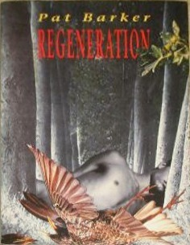
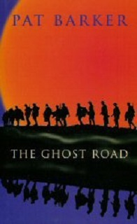

| 20-21世紀英連邦小説 英連邦諸国の今を読み解く | |
| 倉持 三郎 | |
| etwas Neues (2018) | |
20-21世紀 英連邦小説
倉持 三郎
まえがき
1. タイトルについて
まず、本書の題名について説明する。「20-21世紀」というのは取りあげた最初の小説が1960年に刊行されたということと、最後の小説が2014年の刊行であるので、それをひとまとめにした時期ということである。
「英連邦」については筆者の個人的な経験がきっかけである。もう随分前のことだが、ロンドンのヒースロー空港で入国審査を待っているときだった。ふつうの外国人は長い列を作って順番を待っているのだが、すいすいと出て行く者がいる。見ると「コモンウェルス」云々と書いてある。そのとき、彼らはパスポートやビザが違うのだと悟った。これが題名に「英連邦」を入れた理由である。
「英連邦」は正式にはコモンウエルス(Commonwealth)のことである。昔は英連邦(British Commonwealth)であったが、現在ではBritishは取れてしまった。だから「連邦」とするのが一番正確なのだが、それでは一般的に分かりにくい。それで現在の言葉として正確ではないのだが、他の「連邦」と区別するため、便宜的に「英」をつけて「英連邦」とした。小川浩之の2012年の著書も「英連邦」を題名に入れている。
2. 大英帝国と旧植民地の関係
「英連邦」は実質的には大英帝国を引き継ぐものである。大英帝国は多くの植民地を持っていた。日本もかつて韓国を植民地とした。敗戦後韓国は独立した。当然の話だが、植民地にした日本に対する反感、憎悪は深い。ところが大英帝国の旧植民地は、独立はしたものの多くの国は「英連邦」から出て行かない。反感と憎悪しかなければ離れていくはずだ。
なぜ離れないのか。韓国のことを考えると不思議である。「英連邦」に留まる利益があるということだろう。英連邦に属する国や地域は「コモンウエルズ・ゲームズ」というオリンピックにつぐ国際的な競技会を行う。「英連邦」はクラブのようだといわれているが、親戚関係のようなものでもあろう。イギリス本国もこの関係をかならずしもマイナスとは考えていないのだろう。
第2次大戦後の1940年末～1950年代には、本国での工場労働者の人手不足解消のために、海外の英連邦からの大勢の移民を受け入れてきた。1948年、492人のジャマイカからの移民に始まり、1958年までには5万人のインド、パキスタンからの移民があった。1948年の国籍法(Nationality Act)で彼らにイギリス市民権を与えた。(Fryer 372-3)
その後も移民を受け入れて来たイギリス本国の人口も、それに応じて増加した。日本では2008年をピークとして人口は減少の一途をたどり、半ば冗談ではあるが、500年後には、日本という国には日本人は存在しなくなると言われている。
ところが、イギリスは旧植民地からの移民が人口の増加の重要な要因になっている。1950年の時点では、5,000万であったイギリスの人口は、現在では6,500万まで増加した。もちろん移民による問題が起こっていないわけではないが、「英連邦」の国からの移民ならば肌の色は違っても、宗教は違っても「親戚」関係なので相通じるものがあるようだ。
3. 多民族国家
これも筆者のずっと前の経験だが、リージェンツ公園の近くでイスラム教のモスクを見たときの驚きを今でも忘れることができない。一瞬、イギリスはイスラム国になったのかと思った。
最近、ロンドン市長にパキスタン系の移民二世のイスラム教徒が選出された。ロンドンは有色人種の人口が白人の人口を超えたという。かつてそうであったように、イギリスという島で種々の民族が共存し、協力して国家を形成していくという希望はある。
イギリスはそれまでの同種の法律をまとめた平等法を2010年に制定した。人種、宗教による差別を撤廃したのである。その後、イギリスはEUから離脱したが、英連邦の解体は考えられない。
本書で扱う作品は、アメリカ文学を除いた「英語文学」とも呼べるし、そう表現している人もいると思う。しかし筆者は「英連邦」という国家の結びつきに一種の不思議さと畏怖を感じている。
4. ブッカー賞
現在のマン・ブッカー賞の前身であるブッカー賞の授賞選考基準は、イギリス本土以外の英連邦の国の作家を含めることであった。その結果イギリス以外の国の作家が多く受賞した。
ただし、本書は英連邦の53のすべての国の文学作品を取りあげたわけではない。国別に言えば、インド、パキスタン、オーストラリア、ニュージーランド、トリニダード・トバゴ、ジャマイカ、南アフリカにすぎない。また、タイトルの「小説」であるが、第5章のカーカップの作品は「自伝」であり、純粋な小説ではない。
筆者は1952年に大学の英文科に入学した。そして解説書にあった英文学百選に入っている作品から読み始めた。それらはすべてアングロサクソン人の文学であり、白人の文学であった。小説の舞台もグレートブリテン島であった。
ところがブッカー賞が創設されてからは、イギリス以外の国の作家も受賞し、結果として賞自体が有名になった。それに応じて、筆者もそれらの作品を読み始め、それなりに読んで面白いことを知った。使われている言語は英語なのだが、国が違うだけに題材も違う。考えてみれば、英連邦の国の合計人口は世界人口の4分の1以上を占める。したがって、ある程度だが世界の現代文学に触れるとも言える。
たとえばユダヤ系作家の作品を読めば、当然、イスラエルとパレスチナ人の対立を考える。クッツェーを読むと南アフリカの種族の対立が分かる。マーロン・ジェームズの作品を読めばジャマイカを知ることができる。行ったこともなく、今後行くこともないであろうジャマイカという国が、想像の世界に生き生きと浮かびあがる。
5. イギリス法制史
最後に、イギリスの法律の変化について簡単に述べる。イギリス本国のことについて言えば、寛大な社会が出現した。性行動についても寛大な法律が制定された。ビクトリア時代にはピアノの脚も布で巻いて隠したといわれるほど、肉体を、そして性行動を表現することをタブーとしていたが、1950年代より、それを見直す動きが強まった。それが法律の改正になった。
「イギリス人はひとりでも列をつくる」といわれるほど、彼らは秩序を守る。その精神の根底には法律順守の姿勢がある。単一民族ではなく、多数民族から構成されてきた大英帝国では、社会の秩序を守るためには、規則や法令をつくり、それを守り、それを守らせる以外には統治の方法がない。
性行動に関する法律のひとつが、わいせつ文書取り締まり法である。1858年に議会法としては、世界で初めて、わいせつ文書取り締まり法が成立したが、この法令は「わいせつ文書」の定義がない。それ以前、王座裁判所でのコモンローでも「王の安寧を妨げる」というようなあいまいな理由で文書が発売禁止になった。
ある文書がわいせつか否かを判定するのが微罪裁判官に任せられていた。小説が分からなくても、性行為に触れた部分を見つければ有罪にできた。先例拘束の原理を彼らは忠実に守った。20世紀半ば（1959年）に至って、ようやくわいせつ取締まり新法が制定された。これは文書の芸術性を考慮するものである。
1960年にペンギン社刊行の『チャタレー夫人の恋人』が告発され、裁判の結果、12名前の陪審員が全員無罪として判決は無罪となる。日本では伊藤整の訳書が依然として有罪のままであることを思うとき、この無罪判決がいかに画期的なものであるかが分かる。作品の文学的価値を斟酌することが、前年1959年のわいせつ文書の判断基準が明記された結果である。
1967年にはオスカー・ワイルドを文学界から締め出すきっかけになる同性愛を合法化した。同性愛については、その10年前の1957年にジョン・ウルフェンデン(John Wolfenden)を議長とする審議委員会が同性愛を寛大に見る答申案を出し、1967年に法律化された。「私的な同性愛行為は、当事者が成人であり合意していれば犯罪ではない」(Wolfenden 115)とした。
また、1967年には妊娠中絶を合法化する法律ができた。医師2名の判断に基づき、出産するよりも中絶する方が妊婦にとって安全な場合は、妊娠24週を越えない時点で中絶できるとした。しかし、アイルランドでは中絶は依然として原則的に非合法であった。第7章ではそういった問題を背景としたトレヴァの小説を紹介する。
1969年の離婚法改正により離婚も増えた。1800 年から1960年までは5&であった離婚率は、法令施行後には急激に増加し、1986年には20%を越えた。(Stone 419)
貨幣制度については、1967年に10進法の新貨幣制度が始まった。旧貨幣制度では12ペンス(pence)が1シリング(shilling)、20シリングが1ポンド(pound)であった。ポンドが十進法に対し、その下は12進法と20進法のため、物の売買には特に支障はないが、ある金額を分配する場合に厄介である。3人に分けるために十進法ならば全額を3で割ればよいが、それができない。ニュートンもできなかったという冗談があるくらいだ。第3章で出てくるが、日本の中学、高校程度のグラマー・スクール(grammar school)でも貨幣制度を教えている。
また、学校制度も変わって来た。1944年に「11歳試験」(eleven-plus)が導入された。11歳で大学へ進むクラマー・スクールと、そうではなくて就職する人のためのセカンダリ・モダン・スクール(secondary modern school)があった。しかし1960年代以降、11歳で選別しない総合中等学校(comprehensive school)も発足した。今回取りあげた小説では、教育を受けることで今いる環境から脱却し、可能性を自ら見つけ出そうとする主人公も多く見受けられる。
「まえがき」関係の参考文献
- Mullard, Christ.Black Britain
. London: Allen & Un win, 1973.
- Fryer, Peter.Staying Power
:The History of Black People in Britain.
London: Pluto Press, 1991.
- Stone, Lawrence.Road to Divorce: England 1530-1987.
Oxford: Oxford U.P., 1995.
-
Report of the Committee on Homosexual Offences and Prostitution
. London: Her Majesty's Stationary Office, 1957.
- 伊東敬『再増補 英連邦史論』表現社、1967年。
- 小川浩之『英連邦 王冠への忠誠と自由な連合』中央公論社、2012年。
- 川北稔・木畑洋一編『イギリスの歴史 帝国=コモンウェルスのあゆみ』 有斐閣アルマ、2006年。
- 佐久間孝正『イギリスの多文化・他民族教育 アジア系外国人労働者の生活・文化・宗教』国土社、1993年。
- Bradbury, Malcolm.The Modern British Novel
. London: Penguin Books, 1994.
- Caserio, Robert L.The Cambridge Companion to Twenty-Century English Novel
. Cambridge, 2009.
- Darby, Pillip.The Fiction of Imeprialism: Reading Between International Relations and Postcolonialism.
London and Washington: Cassell, 1998.
- Gandhi, Leela.Postcolonial Theory: A Critical Introduction.
Australia:Allen & Un win, 1998.
- Gorra, Michael.After Empire.
Chicago: University of Chicago Press, 1997.
- Head, Dominic.The Cambridge Introduction to Modern British Fiction, 1950-2000
. Cambridge: Cambridge U.P., 2002.
- King, Bruce. Ed.New National and Post-colonial Literatures: An Introduction
. Oxford: Clarendon Press, 1996.
- Quayson, Ato.The Postcolonial Novel.
Cambridge: Cambridge U.P., 2016. (Rushdie)
- Swinden, Patrick.The English Novel of History and Society, 1940-80.
London: Macmillan, 1984.
- 吉田徹夫監修 福岡現代英国小説談話会 編『ブッカー・リーダー 現代英国・英連邦小説を読む』 開文社出版、2005年。
- 高本孝子・池園宏・加藤洋介 共編 『新世紀の英語文学 ブッカー賞総覧 2001-2010』 開文社出版、2011 年。
第1章 イギリス：資本家と労働者
レイモンド・ウィリアムズ『ボーダー・カントリー』(1960年)
「ふたつの国」をひとつにする
本章ではイギリスの作家、批評家であるレイモンド・ウィリアムズ(Raymond Williams, 1921-1988)の『ボーダー・カントリー』(The Border Country , 1960) (注1)を取りあげる。ウィリアムズは労働者の家庭に生まれた。のちにケンブリッジ大学教授となるが、自分の出身の労働者階級のことを忘れず、社会主義の立場を取り、イギリスの「ニュー・レフトの指導的思想家」(Higgins 1)であった。ケンブリッジ大学時代は、共産党の大学支部で、また社会主義クラブで活躍、卒業後は、労働者の成人学級で教えた。
実は、ウィリアムズは『文化と社会』(Culture and Society
, 1958)などを書いた批評家としてよく知られているが、同時に小説も書いている。彼は『文化と社会』の序文のなかで、『文化と社会』と『長い革命』(The Long Revolution
, 1961)と、ここで取りあげる『ボーダー・カントリー』を、その初期の3部作としている。この意味で小説『ボーダー・カントリー』はウィリアムズの出発点を知るのに重要である。
本論では、この小説で扱われている、1926年のゼネラル・ストライキの問題をめぐって、他の作家と比較して考察したい。
1926年のゼネストは、ふたつの大戦間におけるイギリスの最大の社会的事件であった。「ウィリアムズ自身、後に『ボーダー・カントリー』で描いたゼネストは事実に近い」(Higgins 34)と述べている。
当時、ウィリアムズはまだ5歳になっていなかったので、直接の記憶は少なかったであろうが、あとで調べてこの社会的事件をかなり詳しく書いている。 ウィリアムズに、このゼネストがイギリス労働運動史上重要な意味を持っているという認識があるからであろう。
このゼネストは、労働条件に不満な労働者と資本家を含めた中産階級との闘争であった。こういう階級間の紛争という問題を考えるとき、ベンジャミン・ディズレイリ(Benjamin Disraeli, 1804-1881)が『シビル、あるいはふたつの国』(Sybil or The Two Nations
, 1845)で使った「ふたつの国」という言葉が有効である。本論でもこの言葉をキーワードとして、これをめぐって『ボーダー・カントリー』が持っている問題、広くいえばイギリス社会における階級の対立の問題を考えてみたい。
「ふたつの国」はウィリアムズも『文化と社会』のなかで言及している言葉である。『シビル』のなかで支配階級に不満なひとりの人物が次のように言う。
ふたつの国(two nations)です。その間には交流はありません。共感はありません。たがいの習慣、思想、感情に無知です。あたかも違った地域に、違った惑星に住んでいるようです。違った育てられ方をして、違った食べ物を食べて、違った作法を身につけていて、従う法律も違うのです。(Disraeli 65-6)
上層の支配階級には自分たちが中心の国が「国」であり、それ以外には国はない。それに対して被支配階級は、支配階級の国だけが国ではなくて、自分たちの国もあると主張する。
産業革命の結果、工場労働者という貧しい階級が現れた。『シビル』で扱われている時代はチャーティスト運動の時代であり、工場労働者は男子普通選挙権などを盛り込んだ人民憲章の制定を要求した。ディズレイリは政治家としてこの問題に関心を持たざるを得なかった。ウィリアムズにもイギリスには「ふたつの国」があるという認識がある。人民憲章に盛られた要求は次第に実現してきたが、果してふたつの国はひとつになったのであろうか。
ディズレイリが「ふたつの国」という言葉を使ったのは1840年代のことであるが、20世紀の前半において「ふたつの国」がはっきりした形で現われた事件が1926年5月のゼネラル・ストライキである。
このストは歴史のなかで見ると、チャーティスト運動を引き継ぐものである。ことの起こりは炭坑労働者の不満であった。第1次大戦中、イギリスの石炭産業は国家管理になったために、労働者の賃金は一定の水準に保たれた。戦後はドイツ、フランスなどの競争国が戦争の被害を受けたため、イギリスの石炭の輸出は好調であったが、競争国の石炭産業が回復するとイギリスの輸出は不振に陥ることとなる。1921年2月22日で、政府は石炭産業の国家管理を打ち切ることを決定した。この結果、経営状態の悪い炭坑労働者の待遇は悪化する(注2)。
1924年1月、イギリス初の労働党政府が成立し労働者に有利になるかにみえたが、1年たらずで崩壊して保守党政府が成立した。炭坑経営者たちは賃金カットと労働時間延長を要求し、それを労働組合が受け入れるかどうかの回答の最終期限は1925年7月末日であった。しかし組合側は受諾せず、労使紛争を恐れた保守党政府は9ケ月間の補助金を出すことで紛争を収めた。だが、その補助金も1926年4月末日で打ち切られる。
労使は妥結せず、炭坑労組はストに入り、会社をロックアウトした。これを見た全国鉄道労働組合、交通労働組合が炭坑労働組合の支援ストを決定、これがゼネストである。『ボーダー・カントリー』の大西部鉄道の駅員たちが属していたのが全国鉄道労働組合であった。
ゼネストは1926年5月4日から始まったが、12日までしか続かなかった。理由はその当時、労働者の3分の2は非組合員であったことと、さらにイギリス共産党(1920年結成)の活動が活発で、ストが共産党によって牛耳られることをおそれた労働組合会議がゼネストを中止せざるを得なかったからである。
このゼネストについては、多くの作家たちが言及している。たとえば、D. H. ロレンス(Lawrence, 1885-1930)がそのひとりである。そのとき彼はイギリスにいなかったが、姉と妹からの手紙でそのことを知り、書簡で「階級戦争」になることを心配している。
ゼネストの原因となった炭坑労働組合のストは、ゼネスト中止後も約半年続いた。その年の9月にイギリスに戻ってきたロレンスは、故郷の中部地方でストライキを続ける炭坑労働者の悲惨な現状を実際に見た。それを創作的エッセイ「ベストウッドへの帰郷」(Return to Bestwood
)で生々しく描いている。ロレンスはストをしている労働者に同情的である。『チャタレー卿夫人の恋人 初稿』にはパーキンという名前の共産主義者が登場するが、執筆にはゼネストの影響があったと考えられる。
『ボーダー・カントリー』はウィリアムズの自伝的小説である。舞台はウェールズで、イングランドと接している地方、ボーダー・カントリー(辺境地方)にウィリアムズは生まれ、大学に入るまで住んだ。
作品の題名である「ボーダー・カントリー」の「ボーダー(境界)」は象徴的である。ここはウェールズとイングランドと境を接する地域なのでこう呼ばれているが、「ボーダー」のこちら側は労働者の国で、向う側のイングランドは支配者階級の国と読める。主人公は作者をモデルにしたと思われるウィル・プライア(Will Prior)とその父ハリー(Harry)である。ウィルは大学講師としてはマシュー(Matthew)とも呼ばれている。
話は時間の経過を追って展開するわけではないが、内容としては、結婚したハリーがウェールズの小駅の駅員(信号係)に就任するところから始まり、息子ウィルの誕生、そのウィルが奨学金をもらいグラマー・スクール、大学へと進み、卒業後には大学講師になり、父の病気見舞いで帰郷するという流れである。主人公のひとり、ウィルは「ボーダー」のこちら側の労働者の家に生まれたが、大学で学び、大学講師になることで「ボーダー」の向こう側に住むことになった。その結果、彼は「ボーダー」とは何かを意識せざるをえなくなるのである。
この作品のなかで1926年5月のゼネストのことが描かれる。 作者が生まれたのは1921年8月31日であるから、このとき5歳にもならず、そんなに記憶はなかったろう。あとで話を聞いたりして構成したものであろう。
ゼネストは作品のひとつの章でとりあげられているだけであるが、この小説の性格を知るには重要であるし、また、作者の考え方を知るにも重要である。第4章にはウェールズの小駅を中心としてゼネスト中のことが描かれている。
ロンドンにおける炭坑の交渉は決裂した。その日の午後2時に労働組合会議に加入している全組合は、メモリアルホールで集会を開いた。その晩、ハリーが職場に出たとき、2通の電報が全国鉄道労組グリモー支部に届き、信号所の掲示板にピンで留められた。モーガンがそれらをハリーに教えると、ハリーは近づいてそれを読んだ。
「炭坑組合の政府との交渉決裂。執行部は他の組合とともにわが組合の態度を検討中」 (中略) 第2の電報にはこうあった。「執行部は全組合員に次の月曜日からは職場放棄するように指令する」 (B.C. 86)
ハリーはウィリアムズの父をモデルにした駅員である。モーガン・ロサー(Morgan Rosser)は労働組合の支部長である。彼は次のように言う。
「おれたちが国なのだ。いいか、ストをやるなら、おれたちが言っているのはそのことなのだということを理解しよう。 おれたちが言っているのは、おれたちが国であり、おれたちが権力であり、おれたち労働者がボスの政府に抵抗して、おれたち自身の社会制度をつくろうとしているのだ」 (中略) 「そのことを、どのくらいの者が知っているか疑問だ。組合の指導者はそれを知っているか。彼らは勇気があるか。ハリー、おれたちは炭坑夫ではない。おれたちにはストライキをする権利がない。ただ労働者階級のためにするのだ」(B.C. 87)
ゼネストが9日問で終わると、ストに参加した者たちに処分が下された。駅長は左遷される。3人いた信号手は2人に減らされてしまい、ハリーは失職した。しかし、ストに参加しなかった信号手のメレディスが超過勤務を拒否するという、一種の順法闘争によって、信号手はまた3人になり、ハリーは復職できた。メレディスはストには参加しなかったが仲間には気を配っていたのだ。

次に同じゼネストが中産階級の作家の作品にどのように描かれているか見たい。
ゴールズワージーの『白鳥の歌』(Swan Song , 1928)の冒頭の数章は、『フォーサイト年代記』のうちの1926年の時期にあたるので、そこにゼネストが扱われている。フォーサイト家とその一族は上層中産階級である。ソームズ・フォーサイトの娘のフラー(Fleur)とその夫で下院議員であるマイクル(Michael)はストを無効にしようとする交通機関支援隊(ボランティア)のために食堂をひらく。
彼［マイクル・モント］は大きな鉄道駅に行った。ピケが張ってあったが、ボランティアの協力を得て、彼らはすでに列車を走らせていた。彼はボランティアの間をあちらこちらぶらつき回って話した。「そうだ」と彼は思った。「この連中は食べる物がほしいのだ。食堂はどうだろう」彼は急いでサウススクウェアに戻った。
フラーがいた。
「ボランティアのための駅の食堂を開くのを手伝ってくれないか」彼女の顔に「妙案なの」という表情が浮かぶのを見た。それで急いで言った。
「とても大変な仕事だ。できるだけ皆を引き込むのだ。手始めにノーラ・カーフユーとベスナル・グリーンの仲間たちを誘い込むことかできると思う。しかしほしいのは、君の切れる頭と男たちのあしらいのうまさだ」彼女はにっこりした。「分かったわ」と彼女は言った。(Galsworthy 15)
ソームズ・フォーサイトはアイリーンと離婚したあと、フランス人アンネットと結婚するが、その娘がフラーである。フラーはマイクル・モントと結婚する。他方、再婚したアイリーンとヤング・ジョリオンの息子のジョン(Jon)はゼネストのうわさを聞いてパリから帰国する。彼は機関車の釜たき(火夫)をやろうと思っている。そして実際に釜たきをした。彼の姿をフラーは自分が働いている食堂で見かけた。ジョンとフラーはかつては愛しあい、結婚するはずであったが、親たち(ソームズとアイリーン)が離婚したので、親の気持ちを考えて結婚しなかった。一方、ソームズはスト中に自家用車でロンドンの市内を走っていると「財閥」とやじられる。彼は1848年のチャーティストの暴動のことを思いだす。
ウォーの『プライズヘッド再訪』では、語り手は富裕な中産階級に属するチャールズ・ライダー(Charles Ryder)である。1923年にオックスフォード大学に入ったとき、彼は1年に550ボンドの学費と生活費を父からもらっている。1926年の時点で、『ボーダー・カントリー』のハリーの週給は1ポンド10シリングで、年収は約80ポンドであった。7年の差はあるが、ライダーの学費、生活費はハリーの収入の7倍である。
ライダーは、大学を中退して画家になるためにパリに行ったが、1年3ケ日経ったころイギリスでのゼネストの噂を聞き、急遽フランスから帰国する。パリでもイギリスのゼネストのことは話題になっており、「革命」とか「内戦」とかという表現が使われている。フランス革命前夜のような感じであった。
またゼネストは第1次大戦にたとえられる。今回は、敵はドイツの代わりに労働者であり、国家の危機を救うために大学生たちは大学を離れた。ケンブリッジの学生たちも交通機関支援隊として列車などを動かすためにロンドンに出てきている。特別警察官になるものもいる。「ぼく」ことライダーは労働者と戦うために「防衛隊」に参加する。
それでぼくはビル・メドゥズの傘下に入った。それは特別機動隊で、ロンドンの貧民地区の食料供給を守るためであった。最初ぼくは防衛隊に入隊した。忠誠の宣誓をしてヘルメットと警棒をもらった。(中略) 1日3回、トラックに乗ってミルク運搬車隊の先頭に立った。ぼくたちは嘲笑され、時折は馬糞を投げつけられた。しかし実戦に参加したのは1度だけであった。(中略) ぼくたちは全速力で車を走らせた。現場には、電柱の間に1本の鋼鉄のロープが張られていて、1台の手押し車がひっくり返されていて、歩道の上で警官が1人、数名の若者に蹴られていた。この衝突の場所を中心として両側には2派のグループが睨み合っていた。ぼくたちが車を降りたとき、近くにはもう1人の警官が歩道の上に座りこんでいた。呆然と頭を両手でかかえていた。血が指の間から流れ落ちている。2、3人が同情して彼のそばに立ち、のぞきこんでいた。鋼鉄のロープの向かい側には、敵意を見せた若い港湾労働者の一団がいた。(Waugh 246)
このあと聖職者や市会議員が仲裁に入り、これ以上の衝突は回避される。しかし、ここから読みとれるのは、「特別機動隊」は貧民区の食料供給を守るためであったり、ミルク運搬車を護衛するためであったと書かれているから、読者は食料供給まで妨害する労働者をけしからんと思うだろう。労働者が警官に対して暴行を働いたということから、労働者は秩序をやぶり、犯罪をおかしているということになる。つまり、この作品の読者は、犯罪者としての労働者のイメージを持つであろう。ウォーはそういう立場から書いた作家であった。
この作品には召使も登場するが、彼らは生まれつき召使であったというくらいの意識しかない。家の暖炉で石炭をたいている場面はあるが、石炭をだれが掘っているかという考えはない。労働者階級の存在を知らないわけではないのだが、違った人間、別の国に住んでいる奇妙な人間くらいの意識しかない。ゼネストが終わったあとの語り手ライダーの感想として「長い間、獰猛さで伝説的だった獣(beast)が1時間だけ姿をあらわしたが、危険を察知してねぐらに戻った」(Waugh 247)という表現がある。
これは「ふたつの国」の一方の住人が他の国の住人を批判する目である。「獣」ということばが的確に表現しているように、中産階級にとって労働者は人間ではないのである。なぜ、その獣が出てくるのかということには関心がない。
一方、フランスではイギリスで革命が起こるのではないかと取り沙汰されていた。ライダー自身もバスチーユ監獄がこわされて犯罪者が解放されるような事件かと思っていたが、実際には、流血というようなことではなかった。法律を守りながらの闘争というべきでイギリス人的な穏健なやり方であった。
1824年に、団結禁法が廃止されて、労働組合を組織することは合法になった。つまり、ストライキが合法になったのである。しかしマシュ・アーノルドは労働者がストライキをすることは社会の秩序を破壊すると認識していた。それに対してウィリアムズはアーノルドを批判する。
この重要な点で、アーノルドは自分たちの階級の「お決まりの考えや習慣」にしがみついている。 組織し、時折はデモをする労働者階級は、どのように見ても、このような社会を破壊することを求めているのではなかった。利用できる手段によってその時点で支配的な、特定の社会の秩序を変えることを求めているのであった。実際にしばしば、ある特定の不満の解決を求めているだけだった。(C. S. 124)
このようにウィリアムズはゼネスト擁護する。このことは、チャーティスト運動にも言えることである。後世の人たちは、「1926年のゼネストのように、チャーティスト運動も、＜変化をもたらすための間違ったやり方＞の悲劇的例」(L. R.
58) であるとする。あんなに暴力的なことをしなくても待遇は改善されたのだという言い方だが、何もしなければ、選挙権さえも獲得できなかったのだとウィリアムズは主張する。
社会生活を破壊することは、たしかに悪い。しかしゼネストは革命とは違って、社会生活を破壊するものではない。法律をおかすことなく、ある特定の不満、たとえば、賃金がやすいとか、労働時間が長いという問題を解決するためにストをするのである。社会における格差がなければ、好んでストをするわけではない。
1926年のゼネストもフランス人が連想したような革命ではない。法律の範囲を越えないで、労働者の要求を通すための行為である。労働党の下院議員ロイ・ジェンキンズ(Roy Jenkins)の父は違法のピケを張ったことで逮捕され有罪で投獄された。後に労働党の国会議員になるが、ピケを張ったことを恥じている。このように法律順守の考えはあったゼネストは、テロや暴力行為とは本質的に違った。1926年のゼネストでは実際にひとりの死者も出なかった。
レイモンド・ウィリアムズには、イギリスは「ふたつの国」であるという認識があった。しかし、そのままそれを放置してはならないと考え、『文化と社会』、『長い革命』ではひとつの国にする方策を考察している。後者のなかでは、実際に「ひとつの国」(One Nation)という言葉も使っている。
ひとつの国になる可能性がないわけではない。だが、チャーティストが要求した1. 男子普通選挙権 2. 秘密投票 3. 議員歳費の支給 4. 議員の財産資格廃止 5. 平等な選挙区をつくること、という項目が実現するとは、その当時にあっては予想する者はいなかったに違いない。『シビル』でも「ふたつの国」が争う姿が描かれているが、ひとつの国はなかった。チャーティスト運動を進める労働者側の象徴的存在であるヒロインのシビルが、最後に貴族の青年と結婚することで、一見「ひとつの国」ができたかのように見えるが、シビルは貴族の家系ということが分かる。当時にあっては、これが現実であったろう。しかし百年後には、理想を目指した多くの人たちの努力によって、チャーティストが要求した男子の参政権どころか、女子の参政権まで獲得したのである。参政権の点ではひとつの国になったのである。
ウィリアムズは、ふたつの国の問の溝を埋めるためのひとつの方策として教育が重要であると考える。労働者階級が教育を受けることによって、上の階級から蔑視されないような人間になることが可能である。たとえば飲酒で身を持ち崩すことになれば、それは蔑視の対象になる。問題は、貧乏人は飲酒のほかに楽しみがない状況に追い込まれることが多いことだ。能力、意欲のある者には、十分チャンスを与えなければならない。その場合、教育の制度も再考しなければならない。ウィリアムズは言う。
「学習能力に差があることはあきらかだ。しかしこれをもとに、絶対的に選別してしまうことは危険だ。」(L. R. 146)
エリート階級の子弟は、15歳を過ぎても自分の才能を伸ばすことができるが、貧困階層は、15歳で学校をやめて生活のために働かざるを得なくなる。その後は、自分の才能を伸ばすことはできない。本当は、そういう人こそ、自分の能力を伸ばすために勉学しなければならないのに、そうなっていない。これは直接的には、当時あった11歳で進路を決定する「イレブンプラス」の批判であろうが、根本的には貧富による教育の格差批判を含んでいる。
一部の能力のある人たちは奨学金を得て上級学校に進むことができる。しかしこの制度がすべてよいわけではない。一部の人たちが抜け駆けすることになるからである。ウィリアムズの小説第2作『第二世代』(The Second Generation
)のなかでは、父が駅員だった青年が奨学金をもらって大学に入り、卒業して会社の労務課長になって労働者に厳しくするということが描かれている。
「彼のおやじは駅員だった。知っているか。奨学金少年だったんだよ」
「それでどうなったんだ？」
「お決まりのコースだよ。教育を受けると行くところに行った。会社のポケットのなかに」(S. G. 287)
これではひとつの国から他方の国に脱出することにすぎず、本当の解決にはならない。ウィリアムズは『文化と社会』のなかで、労働者の子息が奨学金をもらって上級学校に行くやりかたを批判している。なぜならば、これは中産階級のやり方である「はしご」(C. S.
331)を上るやり方だという。「はしご」をのぼることは個人的な機会を利用することである。ひとりは成功してもみんなが成功するわけではない。「みんながよくなること」(common betterment)ではない。奨学金制度は生まれと財産による階級制度のかわりに、能力という別の条件をつけた点では前とは違っているが、一部の人だけが上の階級に上るだけで、結局は階層制(hierarchy)の維持である点では従来と変わらない。また、次のように書く。
「貧乏人は自分が努力しないから、みじめな状能にいるのだと見られている。貧乏人のうちの一番よいものは、そこから抜け出すだろうと考えられている。」(L. R. 61)
自分だけ抜け出すのではなくて「相互扶助と協同にもとづく社会」(a society based on mutual aid and co-operation)(L. R. 63)をつくるのがウィリアムズの願いである。
ディズレイリの述べた「ふたつの国」をひとつの国にするのがウィリアムズの願いである。
チャーティスト暴動が激しかった時代と比較すると、参政権という点では、「ひとつの国」になったのである。今後百年経つと、今では夢であることが実現するかも知れない。「ひとつの国」をつくるために大事なことは教育であるとウィリアムズは考える。しかし支配階級をつくるためだけの教育制度ではいけない。各人がその能力と性向に応じて教育を受けられる制度でなければいけない。教育の格差を放置すれば、ふたたびチャーティストの暴動、ゼネストのような「階級戦争」が起こる危険があることを『ボーダー・カントリー』は教えてくれる。
ひとつの国をつくるために、ウィリアムズの言葉を借りれば、「長い革命」がこれからも必要なのである。「ボーダー・カントリー」に生まれたウィリアムズだからこそ、自分だけが「ボーダー」の向こう側に移ってしまうのではなくて、「ボーダー」をなくすることを考える。
(1)邦訳に小野寺健訳『辺境』(講談社、1972年)がある。解説にゼネストへの言及がある。本稿では説明の都合がよいので、題名を『辺境』ではなくて『ボーダー・カントリー』とした。なお、山川雄三『感情のカルチェラル・スタディーズ』(開文社出版、2005年)も題名を『ボーダー・カントリー』としている。大石俊一『奨学金少年の文学』(英潮社新杜、1987年)には、この作品への言及があり、ボーダー<辺境・国境・境界線>として階級間の境界・境界線の意味をこめている。(39頁)
(2)ゼネストについては次の研究を参考にしている。J. A. Philips:The General Strike , London: Weidonfeld and Nicolson, 1976. Jeff Skelley ed.,The General Strike, 1926. London: Lawrence and Wishart, 1976. Margaret Morris,The General Strike , Middlesex: Penguin Books, 1976.
(3)ゼネストに言及した作品は本論で取りあげるゴールズワージーとウォーのほかに次の作品がある。H. G. Wells,Meanwhile , 1927. Harold Heslop,The Gate of a Strange Field , 1929. Lewis Grassic Gibbon,A Scots Quair ――Sunset Song , 1932. Cloud Howe,Grey Granite , 1934. Gwyns Jones,Times Like These , 1936. Lewis Jones,We Live , 1939. Joyce Cary,Not Honour More , 1955.
引用文献
- Disraeli, Benjamin.Sybil or The Two Nations
. Oxford: Oxford U.P., 1981.
- Galsworthy, John.Swan Song
. Middlesex: Penguin Books, 1968.
- Higgins, John.Raymond Williams
: Literature, Marxism and Cultural Materialism. London: Routledge, 1999.
- Inglis, Fred.Raymond Williams
. London: Routledge, 1995.
- Waugh, Evely.Brideshead Revisited
. London: Penguin Books, 2011.
- Williams, Raymond.The Long Revolution
. London: Chatto and Windus., 1961. (引用はL. R.
)
- ―――.The Border Country
. London: Chatto and Windus, 1962. (引用ではB. C
.)
- ―――.Culture and Society
. London: Chatto and Windus, 1967. (引用はC. S.
)
- ―――.The Second Generation . London: Chatto and Windus, 1978. (引用はS. G .)
第2章 トリニダード：インド人のディアスポラ
V. S. ナイポール『ビスワス先生の家』(1961年)
本章ではトリニダード島（現・トリニダード・トバゴ）生まれのイギリスの作家、V. S. ナイポール(Naipaul, 1932- )の小説『ビスワス先生の家』(A House for Mr. Biswas , 1961)を取りあげる。この作品はインド人の国外集団移住(diaspora)を描いた作品のひとつである。
「インド亜大陸出身の人間が過去において、また現在、世界の他の地方に存在することである」(Nelson x)
彼らは太平洋のフィジー、カリブ海、その他、世界各地に移住して、その土地で活躍した。「ディアスポラ」は元来はユダヤ人の国外離散について使われたが、それが広義にインド人、中国人、アフリカ人に使われている。この小説はトリニダードにサトウキビ栽培の労働力として集団移住したインド人の物語である。
V. S. ナイポールの祖父母は、年季契約労働者としてトリニダードに移住した。ビスワス氏のモデルは作者の父である。父は1906年生まれで作者が生まれた頃、新聞社の記者であった。母の父親は契労働者であったが、のちに大地主になっていた。父はその資産家の娘と結婚したのである。
「結婚後、市場町トゥナプナに引越してから父は看板書きの仕事をした」(French 15)
父は独学で英語の文章を読み書くことを学び、1929年に地元の新聞「トリニダード・ガーディアン」の記者になった。当時、ジャーナリズムは白人にもアフリカ人にも開かれていた職業であった。
作者、ナイポールはこの島で中等学校までの教育を受けたが、イギリスの大学で勉学できる奨学金試験に合格して、オックスフォード大学に学び、作家になる。
南米北部の国ベネズエラの沖合の島トリニダードは、1498年、その第3回航海のときコロンブスによって最初に探検された。その当時は、のちにアメリンディアン(Amerindian)と呼ばれる先住民たちが住んでいた。その後スペインの植民地となり、1783年の時点までには白人126人、有色の自由民259人、黒人奴隷310人、先住民2,032人が住んでいた。1797年、ナポレオン戦争の結果、割譲されてイギリスの植民地になっていた。
産業として、黒人奴隷を使ったサトウキビ栽培が盛んであった。イギリスに紅茶飲用が盛んになると、砂糖の需要が増し、他のカリブ海の植民地同様、トリニダードはサトウキビ栽培の格好な場所になったのである。紅茶に入れるとともに、砂糖を原料にラム酒が造られ、それが西アフリカで売られ、その金で奴隷を買い、同じ船で奴隷をカリブ海の運ぶ、悪名高い三角貿易によってイギリスは巨万の富を得た。
イギリス人政治家ウィルバーフォース(William Wilberforce, 1759-1833)らの努力によって、1833年にイギリス帝国内での奴隷制が廃止されたので、黒人奴隷に代わる労働力が必要になった。そのために生まれた制度が、年季契約労働制度(indenture)であった。全世界から募集された。旅費を与えられ、年季は5年とされており、その期間が過ぎれば帰国することもできた。
この制度はトリニダードだけではなくて、モーリシャス、イギリス領ガイアナ、フィジーにも適用された。各植民地によってこの制度の開始と終焉は若干のずれがあるが、平均的に言えば1845年から開始され1917年に終焉している。この制度によって国外に移住したインド人は約150万人いた。
年季契約労働に応募したインド人を乗せた最初の船は、1845年にトリニダードに到着した。作者ナイポールの母方の祖父で、バラモンの身分に属するカピルデオ(Capildeo)もそのひとりで、北インドの故郷からトリニダードに向かうのだが、彼の乗った船は、1894年のクリスマスに到着した。作者の父方の祖父は、1870年代にトリニダードに来たようだが、文書上では確認できない。
作者の父、この作品の中心人物ビスワスのモデルになるスィーパサド(Seepersad)・ナイポールは1906年に生まれた。その出生証明書には、父の姓はNyepaulで職業は「労働者」とある。署名はなくて、その代わりに文字が書けない人が使うX印があるだけである。
当時、多数のインド人が移住したのでトリニダードのインド人人口は急増した(年季契約労働制度はトリニダードでは1917年に終わった)。ナイポールが生まれる前年の1931年の統計によると、トリニダードの総人口約40万人のうち、アフリカ人が約40%、インド人が同じく約40%である。インド人の中でヒンドゥー教徒は67.9%、イスラム教徒は16.7%、キリスト教徒は15%であった。年季契約労働者は契約によって働くのであるからに奴隷とはいえないが、それまで奴隷がしていた仕事をするのだから、きびしい労働を強いられた。
トリニダードにはインド系人のほかにも住民はいたが、この作品ではインド人社会が中心であり、宗教はヒンドゥー教で、英語以外にもヒンドゥー語がでてくる。ビスワスは作者の父をモデルにしていると言ったが、フィクションの所も多い。 誇張してユーモラスに描いている所もある。小説として読まねばならない。
「『ビスワス先生の家』の序文」(Literary Occasions: Essays
所収)の中で作者が述べているが、この作品は作者の気持ちに一番近いもので、個人的なものであり、子ども時代に自分が見たもの感じたことを材料にしている。父の死後まもなく書かれたものであり、自分が作家になるきっかけを与えてくれた父の姿を書き留めようとしたのであろう。前掲書(128)によると、作品を刊行してから約20年後、ナイポールはたまたまキプロス島にいたとき、ラジオでこの作品が朗読されるのを聞いた。思わず涙が出てきたという。子ども時代のことを思い出したのであろう。
サトウキビ栽培の仕事はあるので、それができれば何の問題もなく生活できるのであるが、肉体労働ができる兄たちと違ってビスワスはひ弱でそれに向いていない。
10歳の頃、ビスワスは大失敗をした。近所の家の仔牛の見張りを言いつかっていたのに十分注意しなかったので、子牛は池に入って水死した。実は、ビスワスは家に逃げ帰って隠れていたのだが、それと知らず、父は息子が溺死したのではないかと水に潜り、その無理がたたって水死した。
子牛の持主である近所の者は怒り、ビスワスの母を責めたため、その近所の者に自分の家を売却して、その土地を離れて姉夫婦の家に寄寓した。大家族主義というのか、親戚縁者が助け合うという慣習があったようだ。その後、約35年間、ビスワスには自分の家と呼べるものがなかった。彼は自分の家を持とうと努力するが、なかなかうまくいかない。
ビスワスは6年間小学校に通った。読むことが得意であった。縁者の家で新聞などを朗読してお金をもらった。姉は、ビスワスが読むのが得意なのでヒンドゥー教の導師にしようと、弟をある導師の下で勉強させる。導師の家に住み、導師について村を回るので、ビスワスは導師の階級であるバラモンの待遇を受けた。導師は「ラーマーヤナ」にヒンドゥー語で注をつける仕事をしていたので、ビスワスはその一部を読んで聞かされた。このまま行けば、導師になれたはずなのだが、ここでもビスワスは大失敗をした。
ある晩、導師の家の2 階に寝ているとき、トイレに行きたくなった。しかし、トイレは遠いし、鍵を開けたり閉めたりすると導師に迷惑をかけることも考えてハンカチで小用をする。そのハンカチを窓から捨てたのだが、それがこともあろうに、祭礼のときに使う花として植えてあった夾竹桃の枝にかかってしまった。ビスワスは、事実を知って激怒した導師に「お前は導師になる資格がない」と言われる。さらに、「お前は父上を殺した。今度は私を殺す」と言われると、そのまま導師の家を追い出されてしまった。
ビスワスは、導師への道を閉ざされたので他の職業を探すこととなった。仕事探しのために町の通りを歩くビスワスは、仕立て屋の前を通ったとき、自分がカーキ色の生地を裁断してミシンを動かして縫っている姿を想像する。床屋の前を通ると、剃刀を使っている自分の姿を想像する。しかし自分の髪を切ってくれた人たちが好きではなかったことを思いだして床屋はやめる。葬儀屋の前を通り、大小の棺桶が並んでいるのを見る。乾物や、食料品店、どれも気にいらない。
たまたま、ビスワスはアレクという友人に会う。友人はペンキで軽食堂の看板書きをしていた。看板書きに関心をもって見ていると、アレクはその店主にビスワスを自分の助手だと紹介してくれた、店主と話をしているうちに、ビスワスは看板の文案などを提案して気に入られた。文字が読めない人たちがいた時代で、姉の結婚相手も文字が読めなかった。それで文章に熟達しているビスワスは、模様だけではなく文字も書く看板書きは自分の特技と結びつく仕事だと思った。それで看板書きを仕事として始めた。もちろんペンキ屋は階級的には労働者階級であるが、そんなことを考えている暇はなかった。
ビスワスはペンキで看板書きをしながら本を読んだ。小学校を卒業した後、独学でいろいろな方面の知識を得ようとした。『ホーキンズ電気工学入門』(1914) 全7巻を買って、電気について学んだ。自分でブザーや玄関用ベルを作ってみた。しかしその位しかできなかった。材料が入手できなかったのである。その点、本を読むことなら何の制限もなかった。
ビスワスの愛読書のひとつがサミュエル・スマイルズであった。『自助論(Self-helf )』(1859)、『品格(Character )』(1871)、『倹約(Thrift )』(1875)、『義務(Duty )』(1880)、『人生と労働(Life and Labour )』(1887) などがある。どの著書を読んだかは書いてないが、おそらく『自助論』であろう。その冒頭には「天は自ら助ける者を助ける」という諺が引用されており、これこそ人間の行動の根本であると書かれてある。さらに、自助によって成功した人の例が多数示されている。
『自助論』は1858年に刊行されたが、1889年までに15万部売れ、当時の出版界では稀有のことであった。日本では1871年に中村正直によって『西国(さいごく)立志編』として訳出され、100万部は売れたとされる。ビスワスのモデルになっている作者の父は1906年の生まれであり、当時トリニダードにも輸入されたのであろう。
ビスワスは、小説と思って買って読み始めた。小説ではないことが分かるが、魅力がなくなるわけではなかった。彼はスマイルズの作品中の自分たちと比べてみた。
彼は裏通りに住んだ。そしてサミュエル・スマスルズを読んだ。小説だと信じて、スマスルズの本の1冊を買った。そして取りつかれた。サミュエル・スマイルズはどんな小説家よりもロマンティックであり、得心がいった。そしてビスワス氏はサミュエル・スマイルズの英雄たちの中に自分を見出した。彼は若く、貧乏であった。彼は自分が苦闘していると思った。しかし、いつ考えても似ているのはそこまでであった。その英雄たちはしっかりした野心を持ち、野心を追うことが出来て、それが意味のある国に住んでいた。彼には野心はなかった。その上、この暑い国では、店を出すとか乗合自動車を1台買うこと以外に何ができるというのか。(H. B. 75)
努力する点では同じなのだが、いかんせん、この島国では野心を持って努力したからと言ってその行く先は店を持つとか、あるいはバスを購入ことくらいで、何か発明するとかはいうことはできなかった。イギリス本国とは環境が違うのである。
ビスワスはまた、『エピクテトスの談話』や『マルクス・アウレリウス瞑想録』を愛読した。詳しくは書いていないが、前者では「与えられたものを受け取れ。与えられたものを生かせ」という名言はビスワスのモットーとしてふさわしいであろう。エピクテトスは奴隷であった。ビスワスの父母は年季契約労働者であり、それはすでに与えられたものである。その中で最善を尽くすよりほかはないのである。
また後者では「エメラルドは他人に褒められなくても美しさを失うことはない」などによってビスワスのモデルとなった作者の父も慰められたのではないだろうか。
インド人のトゥルシー家という、反物などを扱う店の家で看板書きをしているときに、ビスワスはその店で働く女性を見た。店員で家の娘ではないと思い、ラブレターとして署名のないノートを置いてきたが、これはだれのものかと詮索され、ビスワスのものであることが判明する。ビスワスは女性の母親であるトゥルシー夫人と長女の婿のセスのところに呼びつけられた。
私は結婚するにも金がないのです、とビスワスが言うと、トゥルシー夫人がキッとして、金がないのならどうしてこんな手紙を書いたのかと責め立てた。看板書きでは釣り合わぬということになるところだったが、幸か不幸か、トゥルシー家の当主の導師が、最近、交通事故で亡くなっていたのである。
インドでは花嫁が多額の持参金を婿に与えることになっていた。トゥルシー家もインドの慣習に従って、娘を結婚させるには多額の持参金を婿に与えなければならない。だが、主人が死亡したので、それができないと心配している矢先に、持参金なしでも結婚してくれる男性が現われたので、トゥルシー家では大喜びということになった。他方、花婿は多額の金を出して高級ホテルで盛大な結婚式を挙げなければならないが、もちろんビワスには披露宴をする金はない。
トゥルシー夫人が言うのには、ドラムや踊りや多額の持参金、そんなものは、金持ちにさせておけばよい。「死んだ夫は言っていた。大事なものはひとつだけ。それは血筋だ。お前はよい血筋の家の者だと分かった」(H. B
. 91) 。そして最後に「登記所で簡素な結婚式だけしてくれればよい」と言われたビスワスはこれに同意した。
いくら持参金をもらったかと知人に聞かれて、ビスワスは全然もらわなかったと答えた。相手が「近代的な慣習」だと納得すると、さらにビスワスは、トゥルシー家は看板書きの代金さえ払ってくれなかった、と答えた。
トゥルシー家は豪邸で、大家族で姉妹たちの家族が住んでいる。実際、トゥルシー家のモデルになったカピルデオ家には9人娘と2人の息子がいた。
娘たちは結婚した後も、その家に専用の部屋をあてがわれて住んでいる。ある意味では相互扶助ができるので都合がよい。ビスワスはそこに住む気になれば住めるのだが、わずらわしすぎるし干渉を受ける。
小説には詳しくは書いてないが『正伝』によるとトゥルシー夫人は商才があった。不動産売買で利益を上げていたときの記録が残っている。「ナニー(作者の祖母)は1930年代、不動産売買で一家の財政を支えた」(French 26)
結婚したあと、ビスワスは店を出すように言われて、それにしたがって別の土地のサトウキビ畑の真ん中にある長屋に引っ越す。木造で柱だけがコンクリートであった。ロバにひかせた馬車に乗るだけの家財家具だけであった。家財の中にはビスワスの衣類、本、雑誌、看板下書きの道具があった。建物は安普請で、だれかが壁によりかかると壁が崩れ落ちる不安がある代物だった。その正面を店にしてその後ろにふたつの部屋があった。しかしその長屋には満足できず、黒人の大工に頼んで、自分だけの一軒家をつくることになった。しかし、長い間住めるような家ではなかった。
ビスワスは哲人の教えに敬意を表しているからといって平静な気持ちで日々を過ごしていたわけではない。彼は怒りっぽい。妻と口喧嘩をすることはふつうだとしても、気にいらぬことがあると器物を壊す癖があった。その一例として、義兄のセスに自分が住んでいた家のバラの木を勝手に掘り起こされてしまったときは、その怒りを自分の家の皿などを投げつけて壊すことで表した。しかし、壊しても高価で大損してしまうものは投げつけない。その位の分別はあった。
作品中の言葉で言えば、ビスワスの筋肉は「ハンモックのような筋肉」であった。サトウキビ畑の労働には向かない。それで看板書きになったのである。看板書きは肉体労働であってもサトウキビ畑の労働ほどではない。彼にでもできる労働だったが、彼はそれに満足できなかった。
文字に親しみ、本を読んでいた彼は、読み書きするような種類の職業に就きたかった。姉夫婦を頼って首都のポートオヴスペインに行ったが、たまたま新聞のひとつ「センチネル」紙が目に留まった。田舎にいたとき、知人がその通信員であったことを思い出して、何の紹介も推薦状もなく、いきなり編集者に面会して就職したいと言う。
編集者は追い返すこともなく、その場で面接試験をしてくれた。書いた記事があるか、と聞かれても編集の経験がないビスワスは、しかし、いろいろ本を読んでいる、と答える。
「私は沢山本を読みました」と危険な領域を逃れながらビスワス氏は言った。
編集者は鉛の板をもてあそんだ。
「ホール・ケーン、マリ―・コレリー、ヤコブ・ベーメ、マーク・トウェーン、ホール・ケーン、マーク・トウェーン」とビスワス氏は繰り返した。「サミュエル・スマイルズ」
編集者は顔を上げた。
「マルクス・アウレリウス」
編集者は頬笑んだ。
「エピクテトス」
編集者は頬笑むのを止めなかった。
ビスワス氏も頬笑んだ。自分が馬鹿なことをしゃべっているのを知っていること知らせるためだった。
「君は、娯楽でその作家たちを読んでいるのかね」
ビスワス氏は、その質問の残酷な意図が分かった。しかし意に介さなかった。「いいえ」と彼は言った。「励ましを得るためです」
興奮状態は終わった。(H. B. 308)
ホール・ケーン、マリー・コレリー、マーク・トウェーンなどは多くの人が読んでいたかも知れないが、スマイルズ、マーカス・アウレリウスやエピクテトスになるとふつうとは違う。編集者も何かある男と思ったにちがいない。
これまで何をしていたかと聞かれて、看板書きをしていたとビスワスが答えると、じゃあ仕事がある、と言われ、ペンキと刷毛を渡され、「労務者無用」という看板を書くこととなった。言われたままに看板を書いているところに、先ほどの編集者がやって来ると「『労務者無用』というのは君のことではない。大工や肉体労働者のことだ。君を1ケ月試用する」とビスワスに言い渡していった。
看板書きの仕事も、看板書きをしていた知人にたまたま出会っただけで始まった。結婚もトゥルシー家の店の看板を書いていて、娘のシャマを見たという偶然であった。この新聞社も田舎で知人がその通信員をしていたというだけで、偶然のことだった。
ここからビスワスの記者としての修行が始まる。 編集者によると「われわれが読者を得る方法は読者にショックを与えることだ。彼らを怒らせろ。彼らを驚かせよ。うまく驚かせば、君は仕事をマスターしたということだ」(H. B
. 311) 次の文は編集者から褒められる。
4人の子どもたちが小屋の火災で丸焼けになった母はどうもできず見つめる
月給50ドルをもらった。この頃はトゥルシー家の貸家のいくつかの家賃がビスワスの妻のところに入っていた。
ビスワスは、トゥルシー家が購入したショートヒルの地所の片隅に、自分の家を建てた。しかし、ぼやを起こしてしまう。
首都のポートオヴスペインに一家が移転したときは、トゥルシー夫人の持家に同居して、ふたつの部屋だけを与えられた。そのとき、夫人の一番下の子のオワド(Owad)がイギリスでの医師の修行を終えて帰国した。新聞にその顔写真が出るほどの大事件であった。オワドは、皆どうせ知らないだろうという感じで、自慢したり、でたらめを言ったりする。ソ連では飛行機で田植えをするというのだ。飛行機で種をまくのはよいが、田植えまでするのはでたらめだ。そういうことに対する反発や、イギリスで医者の修行をさせたトゥルシー夫人に対する反発、また息子に部屋を与えるために、自分の居室を取りあげられるという反発も手伝って、ビスワスは日頃のうっぷんを爆発させてしまう。
ヨブの言葉をまねて、「私がトゥルシー家と知り合いになった日が滅びうせよ」と言ってしまう。それを聞いて夫人も黙ってはいない。出ていけということになる。ビスワスの怒りっぽい性格が現われている。
このとき、偶然にビスワスは知り合いの事務弁護士の書記に会う。家を追い出されるので困っている、と言うと、書記が、自分の家を買ってくれないかと言う。 5,500ドルだ、と言われても自分には貯金が800ドルしかないし、どうせ買えないだろうと思ったが、見るだけ見てみろといわれて、急に夜中見に行くことになる。 母親という人が足が悪くて2階に昇れないので、平屋に移るのだという。 その母親に会ってみると感じがいい。その上、建物が立派である。義理の母親には出ていくように言われていし、いずれにしろ、どこかに住まなければならない。ビスワスは買うことに心が動いた。
ちょうどそのとき思わぬ収入があった。かつてショートヒルズに建てた家を買うものが現われた。アフリカ人で、自分は大工で家を建てることができる。しかし、材料が高くて買えない。ビスワスの家を買いたい。しかし家としてではなくて家の材料として買いたい。ビスワスはぼやを出した家を借家か売り家として広告を出していた。反対する理由はない。その場で承知して即金で400ドルもらった。これで所持金は1,200ドルである。所持金が800ドルと1,200ドルでは大違いだ。5,500ドルには遠く及ばないが、少しはましだ、と自分に言い聞かせた。
あとは足りない分を借りるだけだ。ビスワスは親戚のアジョダ(Ajodha)のところに借りに行く。この点では大家族主義が有利だ。赤の他人ではない。しかし、甘いことはない。返済期間は5年、年利8%だという高利貸しだ。しかし、昔からの知り合いであるから、いざという場合は何とかしてもらえる、という腹もあるし、もし皆済できなかったら、他の人から残り分を借金できると考えた。
そしてトゥルシー家を出て書記から購入した5, 500ドルの新しい家に引っ越した。ところが日の光で見てみると欠陥があり、修理する必要な個所がどんどんみつかった。床はきしむ。屋根の下の穴からフクロウが出入りする。雨樋がない。下水管が通っていない地域なのにトイレの貯水槽がいっぱいだ。
隣家のインド人と知り合いになって話を聞くと、かつての所有者の書記は日曜大工で造った家だという。他にも何軒か造っているはずだという。そういう話を聞くとどうも素人大工なので欠陥があるようだ。おまけに新築の値段はその隣人が言うには4,500ドルだ。1,000ドルも高い値段で売りつけられた。5,500ドル払ったとは恥ずかしくて、ビスワスはだれにも言えなかった。高い上に素人の作った家をつかまされたのだ。いくらエピクテトスやアウレリウスを読んでいても住む家のことについてはふつうの人以下だったということだ。
毎月、利息だけでも30ドルを払うという苦しい生活を送っていた。そして皆済のできる5年後が来るのを指折り待っていた。たしかにその期日は近づいてきた。しかし、その期日が間近に近づいたころ、ビスマスは心臓病になった。そして入院した。退院をしたものの新聞社に勤務できる体調ではなく、解雇された。そして46歳で亡くなった。
ビスマスは、夢見たように借金を皆済することはできなかった。しかし、その子どもたちがよく育った。長女のサヴィ(Savi)は成績が良く、奨学金を得てイギリスに留学し、父の病気のときに帰国し、就職した。父の月給よりも高い月給であった。長男のアーナンド(Anand)も奨学金を得て、イギリスに留学した。ビスワスが急死して残した借財はそのうち皆済されることがほのめかされている。
契約労働者の2代目としてトリニダードに住み、肉体労働に向かないので、悪くすると生活もできないという状況に置かれながら、英語の文章を読み書くことを独習することで活路を見出し、幸運にも恵まれて結婚し4人の子どもを育てたビスワスは、息子の描いた伝記によって感動的な姿を見せる。
もしスマイルズがビスワスを知っていたならば『自助論』のなかで、独学で「自らを助ける」ことによって運命を開いた成功者として挙げたであろう。
- French, Patrick:The World is what it is: The Authorized Biography of V. S. Naipaul
. London: Picador, 2008.
- Jayaram, Ned.Diversities in the Indian Diaspora: Nature, Implications, Responses.
New Dehli: Oxford U. P., 2011.
- Naipaul, V. S.A House for Mr. Biswas
. New York: Vintage Books, 1989. (引用ではH. B.
)
- ――.Literary Occasions: Essays
. London: Picador, 2004.
- Nelson, Emmanuel S. Ed. Reworlding:The Literature of the Indian Diaspora
. New York: Greenwood Press, 1992.
第3章 イギリス：労働者階級
デイヴィッド・ストーリー『サヴィル』(1976年)
「労働」とは何か
本章ではイギリスの作家、デイヴィッド・ストーリー(David Storey, 1933-2017)の小説『サヴィル』(Saville , 1976)を取りあげる。この作品は1976年度のマン・ブッカー賞を授与された。
ストーリーは1950代の労働者階級のひとりであった(ここで労働者階級出身と言っているのは父親が労働者階級という意味である)。
「この後者の伝統(中産階級の道徳観に対する反抗)はアラン･シリトー(Alan Sillioe)、デイヴィッド・ストーリー、キース・ウォタハウス(Keith Waterhouseなど1950年代の「労働者小説家」によって代表される) 」(Swinden 181)
ストーリーの作家活動は『スポーツマンの生活』 (The Sporting Life
, 1960)、『キャムデンへの逃走』(Flight into Camden,
1961)から始まった。後者では複数の賞を受賞する。炭坑夫の3番目の息子として生まれ、ウェークフィード・クィーンエリザベス・グラマー・スクールに学んだ。1953年、スレード美術学校(Slade School) に入学、3年間在学した。他の作家と異なる経歴としては、リーズ・ラグビーリーグクラブと契約を結び、プロのラグビー選手として4シーズン出場したことが挙げられる。
この小説はストーリーの「おなじみの自伝的テーマ」(Head 61)を持つ。かつて、石炭産業はイギリスの基幹産業であった18世紀半ばから19世紀にかけて、イギリスが産業革命を成し遂げることができたのは、石炭というエネルギーがあったからである。しかし、その石炭を掘ることは並大抵のことではなかった。すべて炭坑労働者に頼っていたのである。その炭坑労働者は、肉体労働者として下の階級とみなされた。そのため、社会的な評価が低かったが、次第に経済的な力をつけてきて、その子弟たちが活動の範囲を広げた。
小説家で詩人のD. H. ロレンス(Lawrence, 1885-1930)の父親も炭坑夫の息子であった。ロレンスは『息子と恋人』(Sons and Lovers
, 1913)の中で炭坑夫であった父を描いている。必要に応じて『息子と恋人』や他の作品と比較しながらストーリーの作品を読みたい。
『サヴィル』の中心人物コリン(Colin)・サヴィルの父ハリー(Harry)・サヴィルは純粋の炭坑夫であり、南ヨークシャの炭坑で働いている。1930年代のことである。本書の第1章で紹介したウィリアムズが描いたゼネストの時代の10 年後である。作品の冒頭にはサヴィル夫婦と息子が、舞台になる村に一軒家を見つけ、引っ越してきたことが書かれてある。かつて農夫が住んでいた古い家であるが、独立した家である。この夫婦は結婚して1年半になるが、前は共同住宅のなかの一部屋を他の夫婦者と共有していたのだ。
一軒家でよかったが雨漏りした。約2年後には炭坑住宅に入ることが出来た。ロレンスの『息子と恋人』でも、モレル夫妻(ロレンスの父母がモデル)が炭坑住宅に住んでいる。モレル(ロレンスの父)の働いていた炭坑は近くて歩いて通っていたが、ハリーが働いている炭坑はかなり遠く、約9キロも離れている。ハリーは自転車で通ったが、それにしても大変だったろう。炭坑は3交代制なので、夜に働くこともある。朝9時から夕方の5時までという勤務ではない。
しかし、同じ炭坑で働いていても、かならずしも労働者階級でない者もいる。近所に住むレーガン(Reagan)がそうである。彼の服装は炭坑夫たちとは違う ―― 山高帽をかぶり、決して開けることのない蝙蝠傘を持っているのだ。レーガンの仕事は掘り出した石炭の査定、つまり、賃金を決定する仕事である。『息子と恋人』の第4章にも同様な仕事をしている人が登場する。モレルが怪我していたので、息子のポール(ロレンス自身がモデル)が代わりに賃金をもらいにいく。そのとき賃金を渡す人間が上で働く人だ。
レーガンは朝9時から仕事を始めて、5時になれば仕事を終えて帰宅することができる。炭坑夫たちがうらやましく思うのは当然である。レーガンがどういう教育を受けたかは作品には書いてはないが、「母校のネクタイ」から想像すると、しかるべき学校を出ているのであろう。
作品の中心人物、ハリーの息子コリンが小学校の頃だった。一家で夏のあいだの2週間、海岸で暮らすことになった。しかし、今のように有給休暇制度はなかった。2週間の休暇を取りたいのなら、その分だけ他の時期に働かなければならない。8時間働ければよいところを、その倍の16時間働いて、旅行の費用を自分でつくらなければならない。
子どもが生まれたとき、コリンは父ハリーといっしょに病院に迎えにいく。母子とともに退院するときにタクシーに乗ったが、自宅まで10シリング(20シリングで1ポンド。 1967年前の貨幣制度)かかると言われると、行き先をバス停までにする。そのときハリーは言う、10シリングを稼ぐために何時間働くと思うか、と。旅行に10ポンドを使ったので、お産で使う余裕はなかったのだ。
レイモンド・ウィリアムズが主張したように、階級の壁を超えるものは教育である(第1章)。ウィリアムズ自身、鉄道員の息子であったが、ケンブリッジ大学に進むことによって階級の壁を乗り越えた。
『サヴィル』の主人公コリン・サヴィルも、階級の壁を越えるために教育を受ける。石炭が必要で、炭坑夫に頼らなければ石炭を産出することができないのだから、炭坑夫は大事な存在である。ただし、炭坑夫以外の方が自分の才能を伸ばせるということならば、その道が選択できることが望ましい。
ロレンスの父親は、10歳の頃から炭坑夫になった。小学校に行っていないので新聞も拾い読みでできる程度である。その頃は、炭坑夫の息子たちは炭坑夫になる者が多かった。健康であれば、金を出して教育を受けなくても、結婚して家族を養っていけるからである。
他方、頑丈な身体を持っていないと炭坑夫は勤まらない。また、生命の危険をともなう仕事であったので、怪我をしたり事故で死亡することも多い（ロレンスの短編「菊の香」(Odour of Chrysanthemums)では、事故で死亡した炭坑夫を扱っている）。したがって、できることなら子どもには他の商売をさせたいという考えもある。ロレンスの場合、頑丈な体ではなく、炭坑夫には向いていなかった。学校の成績が良かったので小学校を卒業後、奨学金を得てハイスクールに進学でき、さらに大学に進むことで、作家として成長できた。
「まえがき」でも述べたように、第1次大戦後にできた制度に「11歳試験」(eleven plus examination)があるが、この試験によってグラマー・スクール(grammar school, 昔、ラテン語文法を教えていたことからそう呼ばれる)と、セカンダリ・モダン・スクール(secondary modern school) に進学するかを選別した。大学に進むためには前者には入らなければならなかった。
ハリーは息子を炭坑夫にしたくなかった。なにしろ交代勤務の労働はきつい。事故による生命の危険も考えていたかも知れない。レーガンのように、炭坑でも9時から5時の勤務に就かせたい。サヴィル家の、その決定する様子が次のように書かれている。
コリンに試験を受けさせようという考えはレーガン氏から浮かんだ。市にあるグラマー・スクールに行くための機会は翌年来る。もし失敗すればその次の年にまた機会がある。もし失敗すれば、村のはずれにあるセカンダリ・モダン・スクールに行くことになる。炭坑夫の多くはそこの卒業生だった。
「レーガンが言う通りだ」と父は彼らに言った。「息子を俺みたいにしたいのか、それとも1日中立ち上がらないで、金がもらえるレーガンみたいにしたいのか。俺は自分がしたいことが分かっている」(S . 84)
家計が苦しいので、母はかならずしも賛成ではなかったようだが、父親が頑張った。息子の受験勉強を手伝う。『息子と恋人』の父モレルは、小学教育もまともに受けなかったが、ハリーの時代には小学校が義務制だったのだろう。さらに独学でいろいろ勉強した彼は、コリンの作文を見て評点をつける、数学では分数を少数に直すテストをする、スペリングのチェックをする。ハリーはラテン語さえ自分で勉強した。これだけの能力があるのだから、経済的に恵まれていたら彼自身がグラマー・スクールに入って、炭坑夫とは別の道を進んだろう。そういう環境がなかっただけだ。
小説には、入試当日のことが詳しく描かれている。英語、数学、知能検査、自由作文があった。知能検査とは、たとえば、現在地から北に南歩、北北西に何歩進んだら現在地のどの方向に何歩のところにいるかという問題である。紙に書けば簡単に答えられるのだが、紙を使ってはいけない。作文は自由題であったので、コリンは戦争について書いた。このとき、第2次世界大戦が続行中だったのだ。
試験の結果、コリンは希望のグラマー・スクールに入ることができた。他方、レーガンの息子だが、父は教育熱心なのだが、息子にはそれだけの能力も意欲もなくて試験に落ちてしまう。父親からのプレッシャーが強くて精神的に不安定になっている息子の姿が、作品にはよく描かれている。グラマー・スクールの入学に失敗したあと、レーガンの息子は私立の中等学校に入学した。そしてバイオリンなどを練習し卒業したあと、ダンスの教習所のようなことをしたいと言っている。
もちろん、これでよいのである。レーガンの息子の才能はクラマー・スクールの学科には向かなかっただけのことであり、自分に向く方向に進めばよいのである。コリンは学科の勉強に向いており能力があった。コリンのような少年がグラマー・スクールに入学できず、父親と同じように炭坑に入らざるを得ないことが問題なのである。その父親ハリーは、自分が教育を受けていたらどんな人間になったかわからない、と半ば本気で言ったように、炭坑に入らなかったろう。ハリーはすこし早く生まれすぎた。
入学早々、コリンは教師のいじめにあう。炭坑夫の息子であることを知ってのことである。"Saville"のスペリングについて聞かれる。"l"はひとつか、ふたつか。コリンはふたつです、と答える。すると教師は、父の署名には"l"はひとつしかないという。父はどちらでも読み方は同じなのでそう書いたのだと思う、とコリンは答えたが、教師はスペリングを重大視し、「お前の父親は自分の名前も満足に書けないのか」と言う。生徒たちはどっと笑う。さらに、教師は父の職業に「炭坑勤務(colliery worker) 」と書いてあるが、あいまいだとして問い詰める。ほぼ察することはできたろうが、わざと訊いているのだろう。
「「炭坑勤務」とあれば「炭坑で働く人」という意味だが、それでよいか」「はい」彼(コリン)は言った。「「はい」だけでよいのかね」「はい、そうです、先生」と彼は言った。「さて、炭坑で働いていると言って当然な人は沢山いるな。炭坑の経営者も炭坑で働いている」教師は答えを待った。「はい」と彼は言った。そして「そうです、先生」と付け加えた。「お父さんはそういう類の人じゃないね」コリンはどう言葉を加えたらよいか分からず、考えた。「サヴィル君、君のお父さんは経営者じゃないね」「違います」と首を横に振った。「違います、の次に何と言うのかね」「違います、先生」「お父さんは経営者代理ではないんだろう」「違います」と彼は言った。「お父さんは上で働いているのかね。それとも、よく言う、下で働いているのかね」「下です」「お父さんは、そこで炭坑夫を監督しているのかね。それとも、自分が掘っているのかね」「自分で掘っています」「石炭掘ってるだんべ」「そうです、先生」生徒たちは笑った。言葉を替えていえば、お父さんは炭坑夫(miner)ということだな」( S . 138-9)
「違います、の次に何と言うのかね」という教師の言葉は、"No, sir"というべきところを、"sir"をコリンが落としたことを責めている。「掘ってるだんべ」は、原文だと 'E'ews the coal(=He hews the coal)'となる。その地方の方言は"h"音が脱落するので、教師はわざとそれを真似したのである。そして、コリンに"coal miner"を皆の前で言わせようとしている。炭坑夫の息子はこの学校に入る資格がないといわんばかりである。
「地下で働く」と答えると「他の炭坑夫を使っているのか」つまり、 "foreman"なのか訊く。foreman(親方)は平の炭坑夫よりも上である。"colliery worker"とあいまいに書かないで "coal miner"とはっきりと書けというとだ。そう言わせることで、コリンが正真正銘の労働者の息子であることを他の生徒に印象づけようとしている。これだけでもひどいが、さらに教師は付け加える。
「その階級には反逆者の種子があると思う」教師は言葉を切った。「サヴィルの性質にはある程度反抗的なもの、教えることに対する抵抗心があると感じる」(S . 140)
階級差別の言葉である。第1章でウィリアムズが弁護しているように、ゼネストは待遇改善の要求として法律の範囲内でしているのであって、暴力行為ではない。それに対して、この教師のような中産階級は反逆者ととらえる（『プライズヘッド再訪』中に言及があったように、労働者は「獣( beast)」とされている）。
さらに3日目に、コリンは宿題を完成させるため夜更かしをして、翌朝寝過ごしいつものバスに乗り遅れて遅刻した。「3日朝遅刻」と平常成績表に書かれた。これでは3日間遅刻と間違えられるとコリンが言うと、教師はその成績表に「不服従」と記入した。コリンの抗議は正当であり「不服従」ではない。教師は「3日間」と間違えられないように訂正すればよいだけだが、ケチをつけられたと思ったのだろう、訂正しない。それを聞いて、父のハリーが学校に行って話す。泣き寝入りしないで間違いの訂正を要求するコリンとその父親の態度は立派である。
父はコリンに学校のことを聞く。
「教師(teachers)とはどんな人たちだ?」と父は言った。「先生(masters)と呼んでいる」「マスターか。マスターでどんな人たちだ?」「とても厳しい」 (中略)「労働の価値を知っているね」と父は言った。「労働は楽しみだ、というのがモットーだよ」とコリンはブレザーを指さした。父は笑った。「じゃ、俺が働く所の話じゃないな」と父は言った。「それを書いたやつは、あそこに下りたことのない人だ」(S. 145)
制服のブレザーには「労働は楽しみだ」という言葉がラテン語で "Labore ipse Voluptus"と書かれてある。坑内で働くことの苦しみを知らないと、ハリーは中産階級の教師たちを批判している。
サヴィル家は貧しかった。通学には列車を使えば所要時間も短い。コリンがバスを使う理由は経費の節約である。列車の運賃の方が高いのだ。さらにコリンはアルバイトをする。学校が休暇になる夏には、小麦畑の雑草を取ったり収穫の手伝いをする。児童保護法で14歳にならなければ農業の手伝いができないので、まだ11歳のコリンは資格がない。14歳と偽り、2ケ月働いた。1日働いて72ペンスもらえる(舞台は旧貨幣制の時代なので12ペンス=1シリング、6シリングということは1ポンドの 3分の1)。
ある日、コリンは母に連れられて、母の父母の所に行く。その家の掃除をするためである。祖父母は眠っていたのだが、その姿を見て、母は泣きだしてしまう。昔の苦しかった時代のことを思い出してしまったのだ。
父は、3年近くも失業していたのよ。稼ぎがほとんどなかったのよ。もし機会さえ与えられれば、なんでもしたと思うわ。仕事がなかったのよ。実際、何もなかったのよ。今とは違うの。今はやる気さえあれば、よろこんでやとってくれる人がいる。あの頃は、だれもやとってくれる人がいなかった。どんなに能力があり、どんなにやる気があっても。( S . 251)
母親は、自分の親が苦しかった時代のことを思いだして泣いているのだが、当の本人の現在の生活も豊かではない。この両親の家の掃除をしている母の姿が次のように描かれている。
彼[コリン]がもはや見たくないと思った母の一面だった。母が床をこする仕事を終えたとき、彼は母を見つめた。破けた靴下、ほころびたドレス、炎症を起こしている腕も、水膨れしているように見える腕、石鹸だらけの両手、床をこすっているブラシュのゆっくりした、ぶきっちょな動き。(S . 250)
祖父が失職していた頃、コリンの母はよその家で肉体労働をしていた。しかし、そこで働いて自分が生活するだけで、父母にはあげる金はなかった。
コリンの友人で大農場主の息子のスタフォードは試験には落ちたが、グラマー・スクールに入っている。クラスは違う。金持ちに対する優遇措置があるのかはっきりしない。ある日、スタフォードが自転車でコリンの家にやってくる。スタフォードの家は大農場主なので村の人たちとは交際しない。コリンの母はそこで働いていたことがある。コリンは彼の家に招待される。炭坑夫の息子だから、ふつうは招待されることはないのだが、グラマー・スクールで勉強しているからであろう。このスタフォードはのちに大学に進む。
コリンは医師の娘マーガレットが好きになり、結婚も考えている。彼女の方もコリンの家に遊びに来る。彼の家では缶詰の果物くらいしか出せないが、彼女はコリンと結婚してもよいという気持ちになっていた。そのまま進めば、炭坑夫の息子と医師の娘が結婚することになるはずだったが、そうはならなかった。外科医である彼女の父は結婚に賛成していない。彼女の母は、第1次大戦の前にオックスフォード大学に入学したという、女性の先端を進んだ女性である。結婚したあとは家庭を出ず、出産、育児をして専門職にはついていないのだが、女性のクラブに加入して社会的活動をしている。
マーガレットはその娘なので、父親は、娘に大学を卒業させて専門職につけさせたい。コリンと結婚して子どもが生まれると大学を卒業することはできない。しかしそれは口実で、炭坑夫の息子と自分の娘を結婚させたくない。士官候補生として軍隊に入っていたスタフォードが戻ってきて、マーガレットに近づくと、たちまち彼女の気持ちはスタフォードに向いてしまう。いざ結婚ということになると階級の壁が問題になる。
スタフォードはシニカルになっている。コリンに向かって君は「物質的進歩」主義だと冷笑する。地球はそのうちなくなるのだし、また、原子爆弾で破壊されるかもしれない、それなのに何をあくせく苦労しているのかというのだ。しかし、これはあくまでも、生活に困らないから言えるセリフである。コリンにはそういうゆとりがない。まず生きていかねばならない。
コリンは大学を卒業したあと村の小学校の教師になった。グラマー・スクールとは無縁な生徒たちがいることを知った。コリンが情操教育をしようと国語の時間に音楽を聞かせたら校長から注意された。変わったことをする必要はない。この小学校の卒業生は、将来、炭坑で働く。そのためには読み書きだけを教えればよいのだという。しかしそれでは炭坑労働者から抜け出すことはできない、とコリンは思う。
コリンの弟のスティーブン(Steven)は、勉強が好きではなくて11歳試験に合格せず、村のセカンダリ・モダン・スクールに行くことになった。大学に進むコースではないので、将来は炭坑内で働くようになるかもしれない。コリンに言わせれば、そんなことでは炭坑夫の生活から抜け出せない。父親と同じように不規則な生活だ。つらい肉体労働だ。あまりにも弟は呑気に構えている。その上、両親が旅行に出かけて留守のときに、女の子を家に連れてきた。女の子と遊んでいる方が面白いということだ。そんな弟に腹をたててコリンは顔を殴り、さらに投げ飛ばす。
このときのコリンは、マーガレットをスタフォードに取られた理由を、自分が階級が下のせいだと思っていたので、自分の不甲斐なさを弟にぶつけたのであろう。父親は、俺は何もなくて炭坑に入ったが、スティーブンは学校で技術を学んだから俺よりもましだ、と言う。弟は皆が逃げてしまえば坑内で働く人がいなくなってしまう。だから自分は働くという。だから、コリンのように労働者の生活を否定して知的な生活にあこがれるばかりが能ではない。さらに炭坑は国有化されたから賃金の点で安定しいているとも弟は言う。
ところが、意外にも弟のところに、町のクラブからサッカー選手の誘いがきた。作品中ではそれほど描かれてはいないが、スティーブンはサッカーが得意だったのだ。そして契約金として200ポンドをもらう。労働者階級で勉強は好きではなくてグラマー・スクールにも入れなかった者にもこういうチャンスはある。時代の変化によって、炭坑夫の息子が、グラマー・スクールに行かなくても、炭坑夫にならなくても生きることが出きる時代になった。 社会の多様化というべきか、社会が変化してきたのである。
勉強をしない弟を殴ったコリンは、昔の観念にとらわれているのかもしれない。たしかに父親と同じように石炭堀りをすればつらいが、なにも石炭堀りをしないでも生活できるならば、それでよいのだ。プロのサッカー選手が悪いわけではない。自分の才能を伸ばすことができ、生活を維持することができれば問題はない。第1章で述べたように、奨学金を貰って大学に入っても行くところは「会社のポケット」の場合もある。自分の能力と性向によって生きていけばよいのである。
- Head, Dominic.The Cambridge Introduction to Modern British Fiction, 1950-2000
. Cambridge: Cambridge U.P., 2002.
- Storey,David. Saville.
London: Jonathan Cape, 1993. (引用ではS
.)
- Swinden, Patrick.The English Novel of History and Society, 1944-80
. London: Macmillan, 1990.
参考文献
- Bradbury, Malcolm.The Modern British Novel.
London: Penguin Books, 1994.
第4章 イギリス：風刺文学
ウィリアム・ゴールディング『紙人間』(1984年)
「紙人間」はだれか
1. はじめに ―― 寓意小説
本章ではイギリスの作家ウィリアム・ゴールディング(William Golding, 1911-93)の『紙人間』(Paper Men , 1984)を風刺小説として論じる。ゴールディングは、最初の長編小説、『蠅の王』(Lord of the Flies , 1954)によって文壇に登場した。その後、多くの長編小説を発表し、『通過儀礼』(Rites of Passage , 1980)で、マン・ブッカー賞を受賞、続いて1983年度のノーベル文学賞を受賞した。授賞理由は「寓意的方法による人間の悪の追究」であった。その後書かれたのが、本章で取りあげる『紙人間』である。多分、前述の大きな賞を得たことから着想が湧いたのであろう。
ゴールディングの作品の中で一番優れているのは、最初の長編『蝿の王』である。ゴーディングの言いたかったことは第1作で表現されているだろう。『蠅の王』は、人間から文明という衣装をはぎとれば、どこまで堕落するかというテーマを扱っている。
南太平洋の無人島におかれた子どもたちは、はじめはイギリスの学校で教え込まれた通り秩序を守るが、やがて食欲を満たすだけの存在になってしまう。 仲間を殺すことにも何の良心の呵責も感じない。良心というのは人間に固有な性質ではなくて、文明社会が教えこんだものだったのだ。
『後継者たち』(The Inheritors , 1955)では、ゴールディングはさらに広い角度から人間をとらえる。「後継者たち」とは現在の人類である。現在の人類は、その前に存在した人類、たとえば、ネアンデルタール人にとって代わって、地球上で支配権をもつ。「後継者たち」は残忍である。しかし、先住の人類を支配すれば、すべて正当化される。卑近な例をだせば、アメリカ大陸における白人と先住民の関係に似ている。どちらが正しいか、どちらが善であるかということが、判定の基準ではなくて、どちらが強かったかが判断の基準であり、強者が正しいと判断される。
現代の人類もこのようにして、先住の人類に勝ってきたのである。したがって表面上何を言おうとも、その根底には強者の論理が働いていることは明らかである。だから、野獣化した孤島の子どもたちを非難することはできない。
弱肉強食の論理を抑えるものは何か。ゴールディングは、それは、キリスト教であると言いたいようだ。たとえば、『尖塔』(The Spire
, 1964)には、その考えが現われているだろう。大寺院の尖塔は、ゴールディングにとって善なるものの象徴である。この小説では、この塔が崩れる危険があることが暗示されている。尖塔の崩壊が彼の世界観なのであろう。
『適過儀礼』では、「尖塔」を支えるはずの牧師が中心人物になっている。この作品はリアルというよりも象徴的であり、寓意的である。舞台は、イギリスからオーストラリアに向かう船の上で、時期は1820年代のことである。18世紀末からオーストラリアは流刑地になったので、多くの流刑者も乗船していたであろう。 主人公のコリー(Colley)牧師は、酒を飲み周囲の乗客から軽蔑される。船長の反感を買い、船員たちにも軽蔑され愚弄される。酒を飲んで酔った牧師は、ロジャー(Roger) という船員と性行為をするが、酔いから覚めると己のしたことを恥じて死んでしまう。牧師の性的欲望は寓意的なもので、道徳という仮面の下にある破壊的な衝動なのだろう。この衝動は『蠅の王』において、かつての仲間を殺すために森に火をつける行為と共通しているだろう。
大戦に従軍したゴールディングは、大量殺戮を知っており、人間には戒律によってコントロールではきない、信仰心などをいとも簡単に食いやぶってしまう暗い力があることを知っている。
以上のような小説群と比較してみると、『紙人間』は軽い感じがする。ある意味では、息抜きのような感じである。事実、この作品に対する評価は一般には低かった。ブッカー賞や、ノーベル文学賞を受賞した直後であり、読者の期待が大きすぎたということもあろう。一種の軽みを作者が狙っていることは明らかだ。しかし、そのことは、テーマそのものが軽いという意味ではない。重いテーマを軽く表すということである。いくらでも重大に扱えるテーマを、コミックなタッチで表現したと言えよう。その点では、ゴールディングの小説群の中で特異である。
この小説ができたひとつのきっかけは、マン・ブッカー賞や、ノーベル賞受賞であろう。権威ある文学賞を受賞したことによって、作家としての名声は確立した。そのため、以前にもまして、多数の批評家、学者がゴールディングに関心を持つようになり、以下、あらすじで述べるようなケース、あるいは、それに近いケースが出現したのであろう。これらが、創作のひとつのヒントになったと言える。
＊＊＊＊＊＊
この小説の主人公の「私」は、ウィルフレッド・バークレー(Wilfred Barclay)という小説家である。年は60歳くらいで、グラマー・スクルールに入れなかったような、落ちこぼれたちが集まる高校しか出ていなかった。卒業後は銀行に勤めラグビーの選手として活躍するが、金を使いこんで首になる。ところが、戦争が起こり軍隊に入ると、それを題材に小説を書き一躍有名になる。このように、バークレーは社会人としては失格なのだが、小説家として有名になると学者たちは関心を持ってくれ、頼まれて講演会などするようになった。
もうひとりの主要な人物としてリック・タッカー(Rick Tucker)というアメリカの学者が登場する。彼はネブラスカ州の、ある大学の助教授で、バークレーの研究者だ。ハリデー(Halliday)という億万長者の財政的援助をうけて、バークレーの伝記を書こうとしている。
最初の印象的な場面として、タッカーがバークレーの家の庭のくずかごを、掻き回している場面が挙げられよう。まだ、タッカーが助教授にもなってはいなかった頃、「教授」という触れ込みで肩書を詐称して、バークレーの家に泊めてもらう。明け方近く、庭の屑籠の蓋がはずれる音を聞いたバークレーは、野生のアナグマが屑籠の中で餌を漁っていると思い、空気銃を持って庭に出る。しかし、屑籠を漁っていたのはタッカーであった。原稿の切れ端を見つけようとしたのである。バークレー研究の資料になりそうなものは、何でも手に入れようとしているのだ。
「アナグマ」タッカーの餌はいつも、「紙」、つまり、バークレーの原稿である。屑籠を漁っていたタッカーはマーマレードや茶殻でよごれていて「教授」らしくない。そのうえ、その行動が思わぬ副産物を生んでしまった。彼が拾った紙切れの1枚に、バークレーの妻が、「ルシンダ」という女の名前を見つけてしまったからである。あとで分かるのだが、バークレーは結婚前にルシンダと交際があった。バークレーが、ルシルダから送られてきた写真と手紙を破り捨て、屑籠に捨てたのを、タッカーが拾いあげたというわけだ。これがもとで妻は家出をしてしまい、バウアーズという男と同棲するようになる。
変わって、タッカーが屑籠をあさっていた最初の場面から約7年経つ。バークレーはスイスでひとり、執筆に専念しようとしている。そこヘ今では晴れて助教授になったタッカーが有給休暇でやってきた。業績を積んで正教授になりたいタッカーは、そのためにバークレーの伝記執筆に執念を燃やしている。
伝記の基礎資料として、イギリスの自宅に置いてある原稿類を管理し、閲覧したいと、バークレーに頼む。いや、資料の提供だけではなくて、バークレーから伝記作者として公認してもらいたい。それでタッカーはバークレーを追い回しているのである。7年経ってもタッカーは、伝記の材料になるものは何でも集めようとする。ホテルのバークレーのテーブルの上に、原稿を見つけると、タッカーの目は、「口くらい大きく」なり、「瞼が消えてなくなった」ようだ。身を乗り出してきて、その頭は、バークレーの頭とぶつかりそうになる。「先生、まあ、お座りなさい」とバークレーが声をかけるほどだ。
タッカーは目的のためには手段を選ばない。バークレーの娘のエミーとも親しくなるし、自分の妻メアリー ルーさえ提供する覚悟がある。スイスのホテルで妻だけをバークレーのもとに残し誘惑させようとする。スイスの山の中で、バークレーが断崖から落ちそうになれば、タッカーがやってきて助ける。しかしこれは、タッカーの仕組んだ芝居で、あとで現場に行ってみるとたいした崖ではなかった。命の恩人としてバークレーに貸しをつくりたかったのだ。
このようにしつこいタッカーに根負けした形で、自分の資料の管理者としての契約書に署名することを宣言する。しかし、これに条件をつける。タッカーに、ワインを入れた受け皿を床の上に置かせると、跪かせて犬のように飲めと言う。タッカーは、この屈辱的な要求を拒まないで、言われたとおりに飲むのである。この場面はあまりひどすぎて、もう笑えない。タッカーを嘲笑するのは分かるが、この笑いはコミックの限度を越えている。
この後、バークレーは契約書に署名して、タッカーに自分の伝記を書く権利を与え、また、資料や原稿の管理者にタッカーを指名する。この場からタッカーが立ち去るとき、彼は、バークレーに向かって罵りの言葉を言う。それを聞くまでバークレーは、タッカーの気持ちなど考えたことはなかったのだ。罵りの言葉を聞いて、不愉快な気持ちにはなるが自分が悪いとは思わない。
そのあとバークレーは、妻からの手紙を見た。妻は男に捨てられて戻ってきていたが、ガンにかかって余命いくばくもなかった。妻の容態を知ってバークレーは帰国する。このあたりから作品が急にまじめになる。
バークレーはロンドンのクラブでタッカーと会って契約を破棄することを通告する。伝記も書かせないと言う。タッカーは怒ってつかみかかり、犬のようにバークレーの踵にかみ付く。
妻が死んだあと、バークレーは資料に石油をかけて燃やすことにする。一切合財焼いてしまったあとで、タッカーにはこれまで自分が書いてきた原稿を渡そうと思う。つまりバークレーは、自伝を書いてきたのだ。その自伝が実際には『紙人間』という作品になっていることになる。
そんなこととは知らずにタッカーは、河の向こう岸から望遠鏡で、自伝の最後の部分をタイプしているバークレーを見ている。
原稿の最後は「どうしてタッカーのやつ、手に入れたんだ、guを」で終わる。"gu"は、gun(銃)のことだ。gunで終わったということは、銃を持っていることに気がついた瞬間、銃で撃たれてタイプが途中で終ったのだ。タッカーの恨みの一撃である。これで、バークレーの自伝は終わり、作品も終わる。
クロンプトン（Crompton）は、タッカーを「ファウストであるバークレーを誘惑するメフィストフェレス」(Crmpton 166)と見ている。そして、ファウストが一目会いたいと思っていたトロイのヘレンに当たるのが、タッカーの妻、メアリー ルー(Mary Lou)である。しかし、これは読みすぎではないだろうか。この作品は風刺的作品ではないか。
風刺的と言えば、タッカーが初めの頃、バークレーの小説に現れた関係詞節の研究をしていて、それを学会で発表する場面がある。数を数えて、それをグラフに表わし、日本人学者、広重教授の研究結果とは異なる、などと述べているが、聴衆は退屈して居眠りしている。これは文学の研究者と言われる人たちが文学の本質とは何ら関係のない、瑣末なことをしていることへの風刺だろう。
この作品は、広く言えばイギリス文学の中に脈々として流れている風刺文学の伝統に入るだろう。

ジョナサン・スウィフト(Jonathan Swift, 1667-1745)は『ガリバー旅行記(Gulliver's Travels
, 1726)』の「ラピュータ」の中で、学者を風刺している。学者が外出するとき、従者は先端に小石をつめた袋のついた杖を持って歩く。主人が途中で止まって考え事を始めたら、その袋で頭をたたいてやって、主人を瞑想から呼び覚ますのだ。これは、いらざることを考え、空理空論に走る学者を揶揄したものだ。
このように、昔から学者は風刺の対象になっていたわけだが『紙人間』で揶揄され、批判されている学者は、これとは逆に現実的だ。産業社会の中に完全に組み込まれた学者たちである。文学の研究も、いまや「シェイクスピア産業」などと皮肉をこめて「産業」のひとつに数えられる。産業が利潤を追求するように、学者は「業績を稼ぐ」ことになる。学者が研究することは、昇進し、よい地位と、よい待遇を得るためである。ある作家が好きだから、尊敬するからというのではなくて、業績になる研究論文が書けるとかという基準から対象とする作家が選ばれる。
ここに登場するタッカーも、そのような観点からバークレーという小説家に近づいているのだ。バークレーの伝記を書きたい。しかも作者から、その伝記を公認してもらいたい。こうすることによって、業績としての点数があがるからだ。小説家を尊敬しているから、というのではない。
タッカーは、目的のためには、手段を選ばない。その姿は、わざと誇張され、戯画化されているのは明らかだが、研究が「産業」になっている現在では、他の研究者もタッカーを笑ってすますことはできない。
すでに述べたが、タッカーが最後に銃でバークレーを撃つという場面がある。これは、資料の管理権を渡してくれぬバークレーに対する恨みから出ていることは明らかだが、また別の解釈もできる。ゴールディングは「動く標的」(A Moving Target , 1976)というエッセイの中でこのようなことを述べている。「生きている作家は動く標的のようなものである」と。
学生が研究論文のテーマにゴールディングを選びたいと言い、種々の質問をしてくるのに対して、彼は、死んだ作家、たとえば、ジョンソン博士などをとり上げるようにすすめ、生きている作家というのは変化していくから、「動く標的」のように捉えるのが難しい、と言うのだ。まさに難しい。タッカーも生身の作家を相手にしたため、散々な目にあう。死んでいれば、こんなに苦労することはないであろう。いっそ殺してしまえば万事好都合だ。その結果、タッカーは銃でバークレーを撃つことになる。死んでしまえば「動かぬ標的」として狙いやすいからだ。
タッカーは産業の中に組みこまれた学者として、コミカルに描かれてきた。タッカーのような学者に対する批判は明らかなのだが、この物語の語り手であり書き手である「私」、すなわち、ウィルフレッド・バークレーにも注意を払う必要がある。読者は、「私」の視点で物語の展開にしたがいタッカーを見るから、当然このアメリカの学者に対しては厳しくなる。
他方、語り手の姿を客観的にとらえることはできない。バークレーが語っていることが真実であるとは言えないのだ。バークレーは、いつもタッカーからつけまわされているから、一見、被害者のように見える。バークレーは自己を正当化するような書き方をしているし、作品中には、バークレーを客観的にとらえる視点はほとんどないのだが、読者はバークレーを突き離して見ることが必要であろう。
バークレーの視点から離れて見ると、気になるところは、前にも触れたのだが、資料を管理させる場面だ。渡す条件としてタッカーに、犬のように跪いて床においたワインを飲めと言う。タッカーはその屈辱的なことを、言われた通りにやる。この場面では、読者の同情はバークレーから離れる。いくらアメリカの学者を軽蔑しているといえ、犬のような扱いをするのはひどすぎる。もし資料の管理権を渡したくなければ、断ればすむわけだ。ひとりの人間を犬のように扱うことに、バークレーの思い上がりと傲慢を読み取ることができる。 一旦管理権を譲り渡すと言っておきながら、あとでそれを反古にするやりかたも、ふつうの人間では許されない。バークレーを完璧な人間として描いているわけではない。有名作家としての名声に溺れた傲慢な人間として描かれている。
バークレーは、自分は作家であり、自分のほうが偉いと思って、タッカーに対して傲慢な態度を取るが、その生活をみればそんなに威張れるものではない。アルコール依存症で、娘のことも顧みない。彼はあたかも「紙」でできた人間なのである。
T. S. エリオット(Thomas Stearns Eliot, 1888-1965)は、詩のなかで、頭がわら屑で詰まった「うつろな人間」を描いたが、バークレーも似たりよったりである。紙の上に何かしら書き、たとえば、それに賞が与えられ、それで名前が知られ、人びとから認められ、自分が偉くなったと思っている。名声という光を受けて拡大した自分の影を見て、それを自分の実体だと錯覚しているに過ぎない。虚名があたかも実体であるかのような錯覚を持っているだけだ。
バークレー自身もこのことに気がついていないわけではない。自分を「泥棒」だと思う。その理由のひとつには、創作すると威張ってみても、他人の作品を読んで、それを真似して書いているのだ。ある意味では盗んでいるのだ。もっと本質的に言えば、作家は実体を模倣しているにすぎない。プラトンは、大工は机を作るが、画家はそれを写すにすぎないと述べて、芸術家の仕事が物の本質から離れていることを述べている。
確かに作家といっても、草1本つくっているわけではない。虚名を実体だと錯覚したのは、なにもバークレーひとりの罪ではない。マスコミ、ジャーナリズムが異常にふくれあがっていて、それに個人が飲み入まれてしまっているのだ。バークレーを通して、現代作家に対する風刺を読みとることができる。
また作品中で、しばしば言及されているハリデーにも注目する必要がある。彼はアメリカの億万長者で、タッカーがバークレーの伝記を書くのを援助している。また、バークレーに関連したものを集めさせている。しかし、本当にバークレーの作品が好きだとか、尊敬しているとかというのではない。バークレーの作品は、商品としての価値しかない。バークレーに関する物を集めることは、ある場合、投資としての価値があるのだろう。あるいは売名かも知れない。ハリデーも、また「バークレー産業」の担い手のひとりである。
作品の題名の「紙人間」は、タッカーの書くバークレーの伝記の書名になるはずのものであった。原名は復数形である。バークレーのように文筆に携わる人、また、タッカーのように他人の書いたものについて、さらに何か書く人、あるいはハリデーのように、他人の書いた「紙」を集める人も、すべて含まれるであろう。
すぐれた思想を持った人たちが自分でそれを書きあらわし、あるいは、すぐれた人たちの語った言葉を他の人たちが書きしるし、それが、他の人たちに伝えられることによって、万人が恩恵を受けてきたことは否定できない。また、そのような書物についての学問、研究も重要である。ところが、産業の中に組みこまれることによって、学問、研究そのものが、名誉とか、金儲けの手段になってきた。『紙人間』は、このような学問の産業化に対する批判であり風刺であり、また、マスコミに動かされる作家活動それ自体に対する風刺である。また、広く、有名になることで立派な人間になったと錯覚している人びとに対する風刺であろう。
- Crompton, Don.A View from the Spire: William Golding's Later Novels
. Basil Blackwell, 1985.
- Golding, William.The Paper Men
. London: Faber and Faber, 1984. (引用ではP. M.
)
参考文献
- Baker, James R.Critical Essays on William Golding
. G. K. Hall, 1988.
- Gindin, James.William Golding
. London: Macmillan, 1988.
- Page, Norman. Ed.William Golding
: Novels, 1954-67. Macmillan, 1985.
第5章 イギリス：同性愛
ジェームズ・カーカップ『詩人はゲイにならざるをえない』(1991年)
本論では、イギリスの作家、ジェームズ・カーカップ(James Kirkup, 1916-2009)の自伝『詩人はゲイにならざるをえない』(A Poet Could not But be Gay
, 1991)を取りあげる。
まず、イギリス詩に現れた同性愛を見てみよう。これについて考えるのに手頃なのは、文献にあげた『ペンギン版同性愛詩集』(The Penguin Book of Homosexual Verse )である。西欧における同性愛詩のアンソロジーであり、序文では、ギリシャから現代に至るまでの同性愛文学の歴史をたどっている。それを読めば、同性愛詩についておおよそのことは分かる。
イギリス詩では、あの有名なシェイクスピアのソネットが採録されている。貴公子に対する作者の愛は周知のことであるから、それ自体はそれほど驚くことではないが、このソネットに続く多数のイギリス詩人の作品を見ると同性愛詩がイギリス文学に深く根ざしたものであることを改めて認識せざるを得ない。ややおおげさに言えば、このアンソロジーを読むと、イギリス詩に対する見方も変わってくる。
そのひとつには、桂冠詩人テニソン(Alfred Tennyson, 1809-1892)の『イン・メモリアム』(In Memoriam A. H. H.
, 1850)も含まれている。筆者などは、テニソンとハラム(Arthur Henry Hallam，1811-1833)との関係を単なる友情とばかり考えていたので、同性愛の例として挙げられると意外な感じがする。しかし、次のような一節を読むとそういう解釈もあると思えてくる。テニソンが夭折した友人の家の前にたたずむ場面である。
暗い家、もう一度その前にたたずむ、色のあせてしまった、この長い通りに。ドアの前でかつて私の胸は高鳴ったのだ、手が差し出されるのを待って。(Coote 198)
アイルランド出身の詩人、作家オスカー・ワイルド(Oscar Wilde, 1854-1900)は、美貌の青年ダグラスとの同性愛関係により、有罪の判決を受けて投獄された。ワイルドが死去したとき、その死を悼んでダグラスは弔詩をつくった。
昨夜、かの人の夢を見たりき、その顔は輝きわたり、苦しみの陰りとてなく、ありし日に聞きしごとくに、妙なる音にて黄金の声は響きぬ。(Coote 262)
思想家・詩人のエドワード・カーペンター(Edward Carpenter, 1844-1929)は、階級の壁を越え、人間を結びつけるものとして、同性愛を積極的に唱導している。次は彼の詩の一部である。
誇らしげな、きりっとした口元の若者よ、茶色な鋭敏な顔付きでおまえが、芝生の上に座ったとき、なぜ、突然あのふたつの黒い目で、私をきっと見たのか。吸い込むような激しい目付きで。頑健な男なのに、私は震えて、くらくらしたのだ。 (Coote 228)
これらの詩からは不思議な熱い思いや感動が伝わってくるし、同性愛は英文学のなかに脈々と流れており、同性愛を抜きにすると英詩は、随分やせ細るのではないかという感じがする。
この『ペンギン版同性愛詩集』のなかには、イギリスの現代詩人、ジェームズ・カーカップの3編の作品が採られている。「ゲイ・ボーイズ」、「老いらくの恋」と「その名を言うをはばからぬ愛」である。そのうちの最後の作品は、題名は出ていても作品が掲載されていない。なぜ題名だけで中身がないのかというと、裁判の結果、有罪になったので公表できない、とある。告発された『ゲイ・ニューズ』(注1)によると、次のようなものである。(一部のみ訳出)
御子(みこ)
彼らが御子を十字架より下ろせしとき百人隊長なる我は、御子をば両腕に抱えたり。もはや若さ失せし、ひげもなく、息の絶えたる、逸物の下がりたる堅き、やせたる肉体をば。肌にあたたかさ残りいたり。墓所の用意なされる合間、我、御子を守りぬ。母御とマリア裸体を隠す衣服をさがしに去りぬ。
御子のかたわらには我ひとり。今生の別れに御子の唇にキスしぬ。唇は死のごとく苦がかりき。傷痕にキスしたり。血の味は苦がかりき。
今生の別れに我は唇を触れぬ我らが救いと、永遠の歓喜の具なる、あの偉大なる男根の先端に。男根はまだ息づきいたり、死の最後の射精に塗られて。
この作品は『ゲイ・ニューズ』(Gay News
, 1977年)に掲載されたが、神の冒瀆(blasphemy)のかどで告訴され、陪審員による裁判の結果、1977年 7月 4日、有罪の判決を受け、控訴も却下され有罪が確定した。編集責任者、デニス・レモンは9ケ月の執行猶予付きの禁固と罰金500ポンド、雑誌は罰金1,000ポンドであった。
裁判は、当時話題となり、有罪判決にたいして、賛成、反対の意見が新聞への投書の形で寄せられた。「タイムズ」紙は7月13日の「他人の神に敬意を払うことは正しい」という見出しの社説で、この問題に対する意見を表明している。保守系の新聞として当然であるが、『ゲイ・ニューズ』が有罪であるとする陪審員判決を支持している。「陪審員は自身の好悪ではなく、法律に基づいて判決を下したことは賢明であった。・・・・・・キリスト教の信者、たとえ、熱心な信者でなくても ―― それを読んで不快感をもたない者はほとんどいないであろう」
さらに言葉を続けて、問題なのは、同性愛ではなくて「神の冒瀆」であるとしている(「まえがき」でも述べたように1967年に成人の同性愛は犯罪でないという法律が制定されており、同性愛そのものを断罪することはできなくなっている)。掲載誌そのものが、立派なものであるかどうかという議論ではない。大事なのは「問題の詩が、神の冒瀆にあたるかどうか」である。さらに続けて、一般的に他の宗教においても「神の冒瀆」は犯罪であるとする。しかし、いかにも保守系の新聞らしく、すべての宗教については言わない、名前が出ているものは、「イスラム教、ヒンドゥー教、シク教、仏教、ユダヤ教」で、有象無象の新興宗教は認めないという口ぶりである。
イスラム教連盟からは、「タイムズ」紙の社説に対して賛成の意味が表明された(7月15日)。神の冒涜という罪があるならば、それはキリスト教の神だけではなくて少数派の宗教の神にまで広げてほしいと要望している（かつて神の冒瀆で告訴しようとしたら、冒瀆はキリスト教の神だけにしか当てはまらないとして検察から拒否されたとしている）。
裁判後、『ゲイ・ニューズ』の編集者代理が投書(7月22日)で、「神の冒瀆」という判決理由は納得できない、なぜならば、『ゲイ・ニューズ』が「キリスト教信仰」と考えるものを、検察側が受け入れないだけのことであるから、「神の冒瀆」ではなくて「異端」のケースである、と主張する。「異端」を処罰するなら宗教裁判である。『ゲイ・ニューズ』は、キリストを否定するのではなくて、新たな角度から見直そうとしているのだ。
カーカップの友人で、やはりゲイであるイギリスの詩人スティーヴン・スペンダー(Stephen Spender, 1909-1995)は、フランスから投書してカーカップを弁護している。スペンダーはD. H. ロレンスの『死んだ男』(The Man Who Died
)を例に出し、そのなかでロレンスは、キリストが肉体をもって復活し、イシス神殿の巫女と肉体関係を結び妊娠させた、という、新しいキリスト解釈を示していることを指摘し、現代においては性は人間の根本的な力と考えられているので、キリストを性を持つ人間とするロレンスの解釈には正当性があるし、検事がカーカップの新しいキリスト解釈を神の冒瀆とするならば、検事自身が、「人間性」を冒瀆していることにならないか、と論じている。
このように物議をかもす作品を書いたジェームズ・カーカップは、いったいどういう詩人であろうか。1959年に束北大学で教鞭を取るために来日して以来、日本とのつながりは深い(東北大学時代のことはMe All Over に詳しい)。多くの詩集、小説、エッセイを公刊しており、多産な作家である。本論では、その自伝『詩人はゲイにならざるをえない』を中心に、彼のゲイとしての生活と詩作を概観してみたい。
『詩人はゲイにならざるをえない』は1991年代に刊行された。1967年に同性愛がいわば「解禁」になったので、それ以前だと刊行しても起訴されて有罪になり、発売禁止になったろう。ただカーカップが書いている内容は解禁前のことであり、同性愛に対する厳しい見方があったことを念頭において読む必要がある。
この自伝を読めば、まず驚愕し、次に賛嘆の気持ちが沸いてくるのを禁じえないだろう。これほど自己の同性愛を正直に率直に描いた作品はそう多くはないであろうか。自伝文学の頂点をなすのではあるまいか(2004年のマン・ブッカー賞受賞のアラン・ホリングハースト(Alan Hollinghurst, 1954- )の『美の線』(The Line of Beauty )よりも同性愛の表現は強烈である)。そして今後も読まれ続けるであろう。
かつて筆者は、E. M. フォースター(Forster, 1879-1970)の『モーリス』(Maurice,
1913)を読み、衝撃をうけたことを記憶しているが、それに比べるとさらに率直である。その理由のひとつは時代の変化である。1957年にウルフェンデン報告が提出され、その10年後の1967年に同性愛に対する処罰が大幅にゆるめられる法律が制定されたことと無縁ではない。この自伝に描かれている時代(1956-57年頃)は、まだ同性愛が厳しい禁圧されていた時期である。迫害を受けただけではなくて体験したことを表現することも許されなかった。束縛された積もる思いが、表現の自由を得た今、一気に吹き出した感じである。それは、戦争中に禁圧されていたものが、戦後、言論の自由が与えられると一気に噴き出してきたことに似ている。
最初の章「わが王子きたるべし」では、「王子」のごとき相手とのめぐりあいを待望するところから始まる。作者の故郷の北イングランドの港町、サウスシールズでの体験を述べる。幼いときから男性性器にとりつかれていた作者は、冬の寒さのなかでも公衆トイレから公衆トイレと歩き回り、たくましい労働者の性器をのぞき見るのを楽しみにしているような子どもだった。実際は彼が望んでいたようなものを見ることは稀であったが。当時は、エレガントに用をたすという風習があり、手で隠してするので見えなかったと述べている。
「私」が成人してからのことであるが、あるとき公衆トイレで相手を待っていると、隣のトイレとの壁にレンガが一枚はずされたような穴があいている。その穴から腕がのばされる。そのような形で顔を見ぬ相手とマスターベーションをする。終わったあとも顔を見ない。石炭で汚れた若い炭坑夫の手が伸ばされたときのことを思い出している。凍りつくような寒さのなかで、北海の波の音を聞きながら辛抱強く何時間も待った。その間に詩が生まれ、それをトイレットペーパーに書き付けた。
次に「私」は、スペインの旅で愛人を見つけたことを語る。たまたまホテルの近くの森を散歩しているとき、魅力的な目をした田舎の若者ジョルディに会う。本能的に相手が分かるのだ。一目惚れとでも言うほかには言葉がないのである。互いに一目惚れしてしまい、あとは行為に一直線に向かうということになる。どのような形の行為なのかは、極めて単純で「純粋な」ものであるという。裸になり抱き合い体を合わせる。そして、体を震わせているうちにあふれ出るという風に「私」は書いている。絶頂に近づいたとき、「いっしょに」とスペイン語でジョルディが叫んだことも記録されている。
その後ジョルディは警官に逮捕される。フランコ政権のもとでは危険人物と見なされたのである。数年後、「私」はジョルディと再会する。そのとき、「私」にはすでに別の愛人がいることをジョルディは察し、さびしい顔をして去る。男性間の関係も、男女の関係と同じく変化していく。
このあと、この自伝の主人公になるディナが登場する。「私」がスペインのサラマンカの大学で英語や英文学を教えていたときのことである。学生のひとりに恋をする。これが「わが王子」となる。自伝『詩人はゲイにならざるをえない』のクライマックスである。
なぜ惹かれたのか。その理由はその美貌である。彼は約10歳年下のアメリカ人で、ジェームズ・ディーンに似ていると述べられている。ディナは、女性も男性も放っておいてくれない、だれからも好かれる青年だ。ベルリンには、ダンスを勉強している女性の恋人がいる。「私」もその女性と同じように、彼の美貌にひかれて一目惚れする。もう教えるのが苦しくなってしまう。
ディナは詩人になりたい。ベルリンでは、イギリス詩人D. J. エンライト(Enright, 1920-2002)の指導を受けた。「私」はディナといっしょに詩作にはげむ。合作もある。行為をしたいのであるが、ディナが応じない。あるとき、部屋でいっしょに寝転んでいるとき、手を伸ばしてディナの性器に触れようとするが、ディナは拒絶さしたうえに姿を消してしまう。失恋した「私」は、ディナを求めてサラマンカの町をさまよう。ディナの下宿に行き、窓の明かりを見上げる。真夜中すぎに消えるまでじっと立ち尽くす。夜、窓ガラスをたたく雨の音と寺院の鐘の音を聞きながら、ディナを思う。
雨粒は窓をたたく、鐘の告が暗闇に響くとき。君はどこにいるのか。雨のなかを歩いているのか、星空のもとか。
鐘の音は、私の記憶になかに、石造の町の神秘のなかで、この一室でともに暮らした夜と昼をよみがえらせる。
君にこのささやきの言葉を送るはげしい風と雨のなかを。消えかかる君の顔に向かって、また君の声を聞くために。
互いへの信頼とふたりの独自な芸術への信頼に忠実なれ。雨が僕のために打つならば、それは僕たちふたりのために打つ。雨が君の心に落ちる音が聞こえる。(P. C. B. G . 166)
恋する純な気持ちは、対象が女性であれ男性であれ変わらないことが分かる。ディナは戻ってくる。いっしょにまた詩作を続ける。その後も「私」は迫るが成功しない。「私」が初めてオルガスムに達したのは、自分の父親が亡くなりいっしょにイギリスの故郷に行ったときであった。暖房もなく寒いので、同じベッドで抱きあって寝ているうちに、「私」ははじめてオルガスムに達する。そのとき、ディナはまだ受け身であったが、次第にディナの態度も変化して相互的になる。
ディナは、「私」の魂の孤独を救うために現れたキリストのように思われた。それまで多くの相手はいたのであるが、彼らによっては自分の孤独をのがれることはできなかった。ディナにおいてはじめて真実の愛に達したのである。
ホテルの一室でいっしょにシャワーを浴び、そして乾くまで裸であるきまわり、そのあと抱き合いキスし合う。それに疲れるといっしょに外をあるきまわった。そのときのことを「私」は詩に書く。
ぼくの好きなのは、きみの裸体がシーツがもつれたベッドの上にひろげられたときだ。広い、なめらかな胸の上の黒い星のような乳首。日焼けした顔のなかの開いたくちびる、固く引き締まった尻、苦い汁をたたえた小さな盃のようなへそのくぼみ。ブロンドに輝く腿(もも)、足の長い扇形、かがやく頭を抱えた湾曲した腕、体の中心にある暗黒の宝、それは喜びのため脈動し、踊りあがる。 (P. C. B. G. 203)
作者のなかにうごめく男性の肉体への性的な執着は驚くべきものである。北欧のバイキングの子孫であると繰り返し述べているが、バイキングの激しさが、男性の肉体に向かって注がれている感じである。また、それを率直に描くという作家の素朴で強靭な精神にも感嘆する。ルソーの『告白録』を思わせる。作者は、自分の同性愛の行為を愚行であると見る冷めた視点も持っている。
愚行であるかもしれない。しかし、一度も愚行をしたことがない人間が、果しているだろうか。その愚行を隠さずに作者は書く。この点にこそ、作家カーカップの真価がある。彼にとって、詩作がすべてである。愚行も彼の詩という花を咲かせる肥やしなのである。
作者は同性愛を否認し、男女の結婚をすべてとする体制的な考えに反発する。やはりゲイであったフランス人哲学者ミッシェル・フーコー(Michel Foucault, 1926-1984)の言葉である、「男性同士の結婚が認められないかぎり真の文明はあり得ない」(P. C. B. G.
94)を引用している。この著書が刊行された頃、デンマークそしてスウェーデンで同性愛結婚が合法化されたことを作者は歓迎している。その動きはその後、他の国にも広がった。
作者もふつうの結婚をして、父母の期待に応えたい気持ちは人並みにある。しかしできないのだ。自分の欲望に忠実ならんとすれば、父母を捨て放浪し、男を求めないわけにはいかぬ。そういう宿命をもっている。このような人間は数は少ないかも知れないが実際にいる。市民権を与えてもらいたいと叫ぶ。
(1) 『ゲイ・ニューズ』のコピーなど、関連資料は、福田陸太郎、徳永暢三の両氏より拝借した。
引用文献
- Kirkup, James.A Poet Could not But be Ga
y: An Uninhibited Autobiography. Peter Owen, 1991. (引用ではP. C. B. G.
)
- Stephen Coote.The Penguin Book of Homosexual Verse
, Penguin Books, 1983.
参考文献
- Hollinghurt, Alan.Line of Beauty
. Picador, 2004.
- Kirkup, James.Me All Over
;Memoir of a Misfit.
Peter Owen, 1993.
- Meyer, Jeffrey.Homesexuality & Literaturre 1890-1930. London
: Ththlone Press, 1977.
- Mitchell, Mark. Ed.The Penguin Book of International Gay Writing
. London: Penguin Books, 1996.
第6章 イギリス：反戦
パット・バーカー『再生』(1991年)、『ドアの目』(1993年)、『亡霊の道』(1995年)
本章ではイギリスの作家、パット・バーカー(Pat Barker, 1943- )の3部作『再生』(The Regeneration , 1991)、『ドアの目』(The Eye in the Door , 1993)、『亡霊の道』(The Ghost Road , 1995)を取りあげる。最後の作品には1995年度のマン・ブッカー賞が授与された。『タイムズ文芸付録』(1995年9月8日号)の書評者は、「決して過去のものにならない戦争」という見出しで、その時点からおよそ80年前も前の第1次大戦を扱っているこの作品の意義を高く評価している。

『再生』3部作は、ひとつの統一したテーマを扱っている。そのテーマとは、悲惨で無意味な戦争に対する批判であり、その指導者の告発である。『亡霊の道』の扉に載せられた、戦死したイギリス詩人エドワード・トマス(Philip Edward Thomas, 1878-1917)の詩がこの3部作のテーマを明確に語っている。
今やすべての道路はフランスに通じる。生者の歩みは重い。しかし、死者は足取り軽く、踊りながら帰ってくる。(「道」一部)
これらの作品の魅力は何か。登場人物の魅力である。実在の人物をモデルにした人物と虚構の人物がいる。実在の人物をモデルにした登場人物としては、詩人のシーグフリード・サスーン(Siegfried Sassoon, 1886-1967)、ウィニフレッド・オウエン(Winifred Owen, 1893-1918)ら詩人たちや、著名な神経科医で人類学者であるW. H. R. リヴァーズ(Rivers, 1864-1922)、バートランド・ラッセル(Bertrand Russel, 1872-1970)などがいて、強烈な印象を与える。実在の人物をつなぎ、生かす形で虚構の人物、ビリー・プライアー(Billy Prior)を配したことも、小説として大きな効果をあげている。
3部作は、時間的には、第1次大戦の3年目の1917年7月頃から、翌18年の11月までの1年4ケ月である。

3部作の第1作目『再生』は、大戦3年目の1917年7月に設定されている。事件の周囲から次第に中心に迫るという方法ではなく、いきなり事件の核心に入るという方法をとっている。これが功を奏して、読者は作品の冒頭から事件の渦中に連れ込まれる。3作のうちで賞を与えられたのは『亡霊の道』であるが、印象的なのは第1作目の『再生』であり、最後の作は、第1作ほどインパクトはない。
冒頭では、3部作のテーマが明確に打ち出される。それは、詩人シーグフリード・サスーンの戦争続行反対宣言である。筆者は戦争詩人としてのサスーンの名前は知っており、参戦した詩人たちが、塹壕でいかに苦しんだかはある程度知識があったが、この抗議文について知らなかったので、当初創作ではないかと疑ったが、抗議文は紛れもない事実であった。そのことを知るにつれて、こういう勇敢な詩人が存在したことに驚き、その勇気を賛嘆するに至った。この3部作に生命を与えている最大の要素は、勇気ある詩人、サスーンの存在である。
彼は「― 兵士の宣言 ― 戦争はもうごめんだ」(Finished with the War / A Soldier's Declaration
)というタイトルの一文を、実名で1917年7月、『ブラッドフォード・パイオニア』に発表した。以下はその文である。
私は、軍当局に対する意図的な批判として、この宣言を書いています。なぜならば、この戦争は、それを止める力を持つ人たちによって故意に引きのばされていると信じるからです。私は一兵士であり、私の行動が兵士たちのためになると確信しています。私は、この戦争は、防衛と解放の戦争であると信じて参戦しましたが、それは、すでに攻撃と征服の戦争に様変わりをしています。私と仲間の兵士たちが参戦した目的は極めて明白であり、変更の余地はありません。また、もし仮に、その目的を変更したのなら、私たちが参戦した目的は、今や、交渉によって達成できると信じます。
私は軍人の苦しみを見たり、また経験してきました。私はもはや悪と不正の目的のために、これらの苦痛を引きのばすことを画策する者たちに与することはできません。私は、戦争という行為に反対しているものではなく、戦闘する兵士たちを犠牲にしている政治的誤りと不誠実に抗議しているのです。
現在、苦しんでいる者たちに代わり、彼らに対してなされている欺瞞に抗議しているのです。また私は、自分たちとは関係がないとして、果てしない苦痛を冷淡に自己満足して眺めており、それを理解するだけの想像力もない内地の多数の人たちの冷淡な自己満足を非難するものです。
S・サスーン1917年7月(R. 3)
当時を知るイギリスの多くの読者にとっては、作品に登場する人物は周知だからであろう、いちいち説明はなく、会話を通して事実をほのめかす形で進んでいくので、その背景を補う必要がある。
この宣言の内容から分かるように、サスーンは最初から戦争に反対したわけではなかった。むしろ、正義の戦争の遂行に協力したのである。
「彼は多くの人たちと同じように1914年7月31日の「タイムズ」紙の社説を読んでイギリスの参戦は不可避であることを知った」(Wilson 180)
当時は、イギリスには徴兵制度はなかったので、サスーンは志願して入隊した。パブリック・スクール出身でケンブリッジ大学出のエリートにとって志願兵となることは、「高い身分にともなう義務(ノブレス・オブリージュ)」であった。この戦争は正義であるというのも、当時のイギリス国民多数の考えであった。「タイムズ」紙(1914年8月7日) には「軍務に殺到」という記事も見える。
他方、労働者階級はこの戦争に参加したくなかった。中産階級は国家の大事に非協力だと非難するが、労働者から見れば、中産階級は日ごろ「貴族の特権」を行使しているのだから戦争に参加すればよい、と考えた。自分たちは参戦すれば収入が減るのだからと参加したくないわけである。この結果、義務としての徴兵制度を制定する必要に迫られて、イギリスは史上初めて強制徴兵制を1916年に制定した。
イギリスがドイツ、オーストリアに宣戦を布告する1914年8月4 日以前に、サスーンは身体検査を受けて入隊していた。この点では、後に志願する多くの「戦争詩人」のうちでも一番早い。
作品からは、この宣言文がいきなり書かれたようにも見えるが、実際にはここに至る経緯がある。『再生』のなかで言及されているオトリーン・モレル(Ottoline Morel)が背後で重要な働きをしている。オトリーンの夫は、自由党の下院議員フィリップ(Philip)であった。彼女は当時、オックスフォード州のガーシントン村の邸宅に住んでいた。平和主義者であり、バートランド・ラッセルなどと協力して、自宅で良心的兵役忌避者を保護した。オトリーンがサスーンを知るのは、作品の時点よりすこし前である1916年1月で、彼女は「タイムズ」紙上で、S. S.と署名された「勝利の女神へ / 前線の一兵卒のうたえる」という一編の詩を読んで深い感銘を受けた。
戻ってきて私に挨拶せよ、私の喜びであった色たちよ。殺された兵士たちの悲しみの血の色でなくて庭園のように輝いて戻ってこい、明け方と雨の後の日没の流れる旗となって。 (以下略)
著者がだれであるか知るために、オトリーンは「タイムズ」紙に手紙を書き、エドモンド・ゴスから返事をもらった」(Gathorne-Hardy 91)。 作者がサスーンであり、実際は兵卒ではなくて士官であることまで知る。そのあと彼女はサスーンに手紙を書き、返事をもらう。1916年8月、帰国したサスーンは、ガーシントン邸にオトリーンを訪問し、ここではじめてふたりは会った。ここには、兵役忌避者たちがおり、ひとつの反戦の拠点になっていた。そこでサスーンは、戦争について勃発前に志願して入隊した自分とはまったく違う意見があることを知る。
「サスーンは、多分ロスは除いて、戦争についてそれまでとはまったく違う見解を聞いた」(Wilson 295)
サスーンはふたたび出征し、翌17年4月2日、喉に負傷し、6月に帰国すると自分の体験をもとに戦争遂行について忌憚のない意見を公表しようとした。はじめ、『ネーション』の編集者と接触したが、編集者はその結果を恐れて引き受けなかった。サスーンはふたたびガーシントン邸にモレル夫妻を訪問して、戦争に対する憤懣をぶちまけて「兵士たちは、殺されるか障がい者にされる」と言い、政府に抗議すると言った。
下院議員のフィリップは、ことの重大さのために反駁したが、オトリーンはサスーンをラッセルに紹介した。ラッセルは抗議文を200語の文章にまとめるように、と言った。1週間後、原稿をもってサスーンはラッセルを再度訪問した。原稿はラッセルによって『ブラッドフォード・パイオニア』に送られ、「一兵士の宣言」として公刊された。それが『再生』の冒頭の文である。
当然のことながら、サスーンの文は反響を呼んだ。軍法会議にかけられ、処分されるケースであったが、友人のロバート・グレーヴズはサスーンをかばい、戦場での精神障害のせいであるとした。そしてラッセルがサスーンを煽動し、平和運動に利用していると非難したのである。
サスーンは医務局の指示を受け入れざるを得ない状況になっており、精神障害があるとして、地方のある場所に送られました。だれも分かるように、それが事実なのです。医務局の友人たちの診断は決定的です。彼の意見は変化していませんが、あなたが(あなたの主義のために、彼に対して)することは何もないのです。(アラスにおける戦闘のあとで)どのような健康状態にあるか知りながら、彼のしたことを許す、あなたの無分別を強く非難いたします。(Clark 403-4)
他方、平和主義運動を進めるラッセルの一派は、これを下院で取りあげて、この宣言文にある程に、前線の兵士は苦しんでいるということをアピールした。自由党で、平和論者リース=スミスは、その趣旨で、下院で宣言文を読みあげる。それは次の「タイムズ」の記事(1917年7月31日)に見られる。
彼［リース=スミス］が読んだ書簡は、それに賛成できないにしても、書き手が精神障害を受けていることを示すものは何ひとつない。下院議員の多くが知っているこの若い士官［サスーン］は、彼［リース=スミス］の印象では、異常な精神力と稀にみる決断方の持ち主である。医務局の決定は、健康上の理由ではなくて、ほかの手段を取った場合に生じるであろう世評を避ける一番簡単な方法に基づくものである。
要するに、この宣言文によって平和運動が広がるのを恐れた当局は、サスーンを精神に障害をきたした者として病院に送ったが、それは不当である、ということである。そのため、陸軍省次官も、サスーンを処罰することは、友人たちの賛成するところではないだろう、と答弁し、議員の賛成を得て不問に付するという決定をした。
結局、サス一ンは処罰されることはなかったが、スコットランドのクレグロックハート病院に入院することになる。この病院で、サスーンは大尉で神経科医のリヴァーズの診察を受けた。リヴァーズは、戦争神経障害(シェルショック)で送還されてきた兵士たちを治療していたのである。戦場では、それまで一度も想像したことがないような経験のため、兵士たちの精神状態はおかしくなっている。だが、その治療方法はよく分かっていない。最後には、サスーンは、戦争反対には変わりはないが、戦友たちの苦しんでいる前線に戻ることを決意する。
偶然であるが、その病院でサスーンはウィニフレッド・オウエンに会う。オウエンは1915年10月志願して出征したが、病気のためこの陸軍病院に入院していた。この辺の事情は、オウエンの友人の詩人、エドマンド・ブランデンの回想に現れている。
クレイグロックハートで、彼は、病院で積極的に活動した。音楽会で演奏し、講義し、雑誌『ヒドラ』を編集していた。8月のはじめにシーグフリード・サスーン大尉が到着した。彼は、すでにこの詩人の『老いたる狩人』を読んでいた。「サスーンの塹壕生活の描写に比べられるものは、これまでなかったし、これからもないだろう」ある日、彼は思い切って、自分の尊敬する詩人の部屋のドアを叩き、自作の詩を示した。称賛を受けたものもあり、また批判されたものもあった。(Day Lewis 168)
同じ病院に、プライアー(Prior)という士官が入院している。前線で負傷して帰国している。架空の人物で、第2作、第3作に現れて、実在の人物をつなぐ働きをする。実在の人物では物語を作るのには限界がある。実在の人物は事実にしたがって働かせ、それに架空の人物を交ぜて物語を構成する。つまり、実在の人物については事実に即して書くが、他方では、架空の人物においては自由な解釈を与えている。
3部作の第2作目『ドアの目』は、虚構の人物プライアーが中心となっている。時期は休戦の年、1918年の春である。まず、彼と戦友マニングとの同性愛の露骨な描写が出てくる。架空の人物である彼は、兵士たちの性生活を措くのにも使われる。実際、プライアーの、サラとの肉体交渉もかなり詳しく描かれ、また売春婦との交渉もある。
プライアーはぜんそくのため、今、軍務を離れ、軍需省情報部に勤務している。彼の仕事は、戦争遂行のための軍需物資生産を妨害する運動をスパイすることである。刑務所にビーティー・ローパー(Beaty Roper)という女性を訪ねる。彼女は平和主義者で戦争に反対し、首相のロイド=ジョージらを毒殺しようとした罪で収監されている。プライアーは子どものころ、ローパー夫人と親しかった。それを利用してプライアーの上役は、ローパー夫人の背後にある組織と指導者を探ろうとしている。
プライアーもローパー夫人と同じ、労働者階級の出身である。したがって、夫人の味方でなければならないのだが、現在のプライアーは士官で、階級が上になったので労働者側にはつかない。また、戦友のことを考えると、国家権力の側に立たざるをえない。作者によると、ローパー夫人とその事件は、元になる事件があった。 「ビーティ・ローパーの物語は、ほぼ、1917年の毒殺陰謀事件に拠っている」(E. D.
278) それによると、ダービー州の裏町に住む古着商人のアリス・ウィールドン(Alice Wheeldon)という女性が、首相のロイド・ジョージ、軍需相のアーサー・ヘンダソンなどを毒を塗った吹き矢で毒殺しようとした。良心的兵役拒否者と、それを追う軍需省情報部のスパイの様子を明らかにしている。
裁判で夫人は、毒は番犬を殺すためであったと主張した。スパイの証言を基にして有罪となり、10年の強制労働の判決であった。収監されたが、ハンガーストライキをした。「当局を不安にさせたのは断続的にアリスが食べることを拒否することであった」(Rippon 128)。刑務所内で死亡するのを恐れたロイド=ジョージ首相の判断で刑期前に仮釈放されるが、終戦翌年の1919年に流行したインフルエンザで死亡した。
平和運動家たちを裏切ったのはプライアー自身だった。信じがたいのであるが、プライアーは戦傷による記憶喪失にかかっており、自分が平和運動家を裏切って、自分が知りえた平和主義運動の指導者の隠れ場所を、夢遊病にかかっているような状態で教えてしまう。その結果、指導者は警察に逮捕されてしまう。裏切り者としてつばを吐きかけられても、その理由が分からない。彼も戦争の犠牲者のひとりといえよう。
第4章で、軍需工場側のスパイ、スプラッグについて詳しい説明がある。裁判における供述書によれば、彼は、労働党と徴兵反対同盟の反戦運動を探る任務を負っている。1916年の10月から12月にかけて、軍需工場に出かけて、ストライキの指導者を探偵した。軍需工場のストライキは戦争遂行にとって重大な妨害になるのである。戦争中の労働者のストライキというのは、ちょっと考えにくいのであるが、これも、事実に近い。実際にストライキがあった。「タイムズ」紙は、1917年7月7日の「ストライキによる軍需品の損失」という見出しの記事で、前日の軍需省政務次官のマンチェスター市における労働者の集会での戦争協力をアピールする講演の内容を伝えている。
最近のストライキは、銃の生産と修理を遅延させた。ストライキが行われなかったならば今日は、銃は数百丁多かったであろう。この損失を補填することはできないであろう。どのように緊急度が高くても、敵に拿捕されたとまったく同じように銃は失われたのである。航空機についても同じである。生産高が減少し、その分だけ弱体化した。銃、航空機、自動車、戦車そのすべてを大量に ―― 前線一帯に常に多量に集中することが依然として要求されている。
前述の「徴兵反対同盟」について一言加えると、開戦当時は、イギリスの正規軍は16万人いた。初めは志願兵を募集していたが、それでは兵員不足で、戦争遂行は不可能であることが分かってきたので、徴兵法を制定した。第1次徴兵法は1916年1月に成立、兵役年齢のすべての独身男性を強制徴兵することになった。さらに同年5月、18歳から41歳のすべての男性を強制徴兵する第2次徴兵法が制定される。
他方で、「徴兵反対同盟」は徴兵に反対した。ただし「良心的兵役拒否」は正式に認められ、彼らは非戦闘部隊に所属した。国家権力に真っ向から対立する徴兵絶対反対者が約1,500人おり、彼らは投獄された。『ドアの目』の背景にはこういった戦争遂行反対の動きがあった。

3部作の最後『亡霊の道』では、プライアーがフランス前線に出征し、彼の視点からの戦争が見られる。ブライアーの出征は4度目だが、初めて出征するハレッ卜(Hallet)という青年を対照させる。ハレッ卜は、不安でブライアーを頼りにしている。婚約者がいるが、結婚は早すぎると親に反対されて、結婚できないままに、婚約者の写真だけもって戦場にやってきた若者だ。
他方、ロンドンの病院に移ったリヴァーズの回想が入る。彼は、かつて人類学者として、南太平洋の島エディストーンで、島民の性生活、結婚、血縁関係、葬式、頭蓋骨の保存の研究調査をした。その島のことをしきりに回想する。彼は戦争がなければ、この調査をまとめて世に問うことができたであろう。彼もまた戦争の犠牲者のひとりである。
この作品で、リヴァーズのエディストーン島の回想は、かなりのスペースをとっているが、これと第1次大戦の関係はどうなのだろうか。かつてこの島の部族は首狩り族であり、ある午後の戦いだけで93の首を取ったと自慢する老酋長もおり、今は首狩りをしないので若者が元気をなくしたと書かれている。これとフランス戦線を比べてみると、ヨーロッパ大陸も未開と思われている南太平洋の先住民と、あまり変わらないことに気がつく。第1次大戦も、要するに取った首の数を自慢するだけにすぎないのである、という批判が読みとれる。いったいヨーロッパ「文明」とは何なのか。
サスーンを敬愛したオウエンの生涯がまた劇的である。休戦のわずか1週間前、前線で戦死した。
彼[プライアー]はオウエンが戦死するのを見た。彼の体は銃弾のため地上から投げ上げられ、空中をゆっくりと弧を描き落ちてきた。永久に落ちないのでしはないかと思われた。(G. R. 273)
休戦（11月11日）の約1ケ月前、10 月4日、ハレット青年は頭部を撃たれて、現在リヴァーズが勤務しているロンドンの病院に護送されてきている。父親のハレット少佐と母親が見舞う。頭蓋骨を破損しているハレッ卜は何かうめいているが、父親にはそれが聞きとれない。
「何と言っているんだ？」ハレッ卜少佐が聞いた。
リヴァーズは、「分からない」と言おうとして口を開いたが、分かることに気がついた。
「息子さんはこう言っている。『値しない』と」
「値する、ね」パレット少佐は、息子の腕を握りしめていった。少佐は苦しんでいた。自分で何を言っているのか分からなかった。
「アアイシナ」(G. R. 274)
「アアイシナ」とは、意味不明の音声である。それをリヴァーズは"It's not worth it"(値しない)と解釈した。「戦争は生命を捨てるに値しない」の意味である。これが、作者がこの作品に与えた結論である。
全作品で、まず強烈な印象を与えるのはサスーンである。戦争遂行に反対するという、勇気なくしてはできないことを彼は決行する。さらにサスーンにおとらず感銘を与えるのは、リヴァーズである。彼は精神科医として、戦場で精神異常を起こした兵上たちの治療にあたっている。患者の信頼を集め、ブライアーはリヴァーズを「父」と考えているほどである。戦争神経症の患者にとって、彼は頼りになる存在であった。
この戦争という狂気のなかにあって、リヴァーズは冷静に行動している。医師だから当然かも知れないが、冷静で、完治しない戦病者を簡単には戦地に帰さない。おそらく、リヴァーズは戦争全体を愚挙と考えていたのであろうが、そのことは公言しない。ただ、戦傷者を治療することに全力をあげている。
3部作の第1作の題名「再生」の意味は、文字どおりには、神経を再生することであるが、それが戦傷者を治療する意味になっている。ところが、これには大きな皮肉がこめられている。医師が完全に治せば、ふつうなら幸福な生活につながるのであるが、この場合は違う。戦場に戻ることを意味している。「再生」は、生きることではなくて、死ぬことを暗に指している。だからリヴァーズのやっていることは本質的には空しい。だが、彼は空しいことを知りながら、最善をつくす。あたかも狂気の世界のなかの正気な、静かな一点のようである。
彼は、戦争精神障害の原因は、指導者に対する不信であるとする。「多くの場合、戦争精神障害が起こるのは、上の階級の人びとに対する嫌悪と不信の表現を抑圧しなければならないからである」(G. R. 257)
- Barker, Pat.The Regeneration
. London: Penguin Books, 1992. (引用ではR
.)
- ――.The Eye in the Door
. Penguin Books. (引用ではE. D.
)
- ――.The Ghost Road
(引用ではG. R.
)
- Clark., Ronald W.The Life of Bertrand Russell
. Penguin Books, 1978.
- Day Lewis, C. Ed.The Collected Poems of Wilfred Owen
(New Directions), 1965.
- Gathorne-Hardy, Robert. Ed.Ottoline at Garsington: Memoirs of Lady Ottoline Morrel, 1915-1918.
London: Faber and Faber, 1974.
- Rippon, Nicola.The Plot to Kill Lloyd George: The Story of Alice Weeldon and the Pear Tree Conspiracy.
South Yorkshitre: Wharncliffe Books, 2009.
- Wilson, Jean Moorcroft.Siegfried Sassoon
: The Making of a War Poet: A Biography, 1886-1918. London: Duckworth, 1998.
参考文献
- デイヴィッド・ボウルトン『異議却下 イギリスの良心的兵役拒否運動』未来社、1993年。
第7章 アイルランド：中絶問題
ウィリアム・トレヴァ『フェリシアの旅』(1994年)
58条妊娠しているすべての女性は流産の目的で非合法に毒物あるいは有害なものを自身に与えること、あるいはだれであれ、妊娠しているか否かは関係なく女性の流産を促す目的で毒物、あるいは有害なものを与える者、あるいは、同様の目的で不法に器具、あるいは、他のいかなる手段を用いる者は刑法に触れ、それによって告発され、終身刑に処せられる。59条女性が妊娠していなくとも女性に流産させる目的のために不法に、毒物あるいは有害なのを、あるいは何であれ同じ目的のために不法な器具あるいは物が使用されるか用いられるならば、不法行為であり、告発され、禁固の刑を受ける。
(a) 妊娠が24週間を越えていないこと、かつ、妊娠の状態を続けることが、妊娠を中絶するよりも、妊娠した女性の肉体的、精神的、あるいは子どもによって大きな危険をともなう場合(b) 妊娠の中絶が妊娠している女性の肉体的、あるいは精神的健康にとって、全生涯にわたる重大な損傷を防ぐために必要な場合(c) 妊娠を継続することが、妊娠を中絶するよりも、より大きな生命の危険を妊婦に招く場合(d) 出産するならば、出産子が重度の障害を持つほどの肉体的、精神的異常が起こりうる十分な危険がある場合 (Glazebrook 13)
1 複数の医師が中絶によってのみ次の場合の妊婦の生命を保持できることを確認すること2 病気による生命の危機があるとき3 差し迫った生命の危機があるとき4 自殺による生命の危機があるとき
ある晩、大男の双子がブーツでジョニー・ライサットの腹を、あばら骨をどんどんと踏みつけた。彼は「広場」の記念像の傍に気を失って倒れていた。顔から血が流れ、片目は殴られたため開かなかった。殴り踏みつけた方はタバコをくわえたままであった。(F. J. 202)
ふたりはまたいっしょになれたので、彼の灰色がかった緑の目は輝く。もう彼をさがしまわる必要はないのだ。「上にジャガイモをのせようか」ミス・フュアリの弟が言う。そして中庭の向こうの野原の隅に掘った穴を指さす。「夜にしょうか」と彼は訊く。「だれか中庭に来るかもしれない。昼間だとそのことを考えなければならないから」死体は納屋の中の乾草の下にある。闇の中で、彼女は彼の後についてそれを運ぶ。そして穴の中に置く。 血がついており皮だけだ。 もう腐敗している。「これしかない。仕方がない」とだれかが言う。土がシャベルで入れられる。地面は元通りにされる。(F. J. 142)
母は入口でエンドウのさやをむいている。ドアの先は中庭だ。涙は水切りざるの中のエンドウ豆の上に落ちる。「フェリシア、私がこのことをあなたにしたらどうだったと思う?」と母は言おうとしている。すすり泣きで言葉と聞き取れない。でもフェリシアには、とにかく分かる。言葉にならなくても意味は分かる。 (F. J. 143)
たぶん10時半ごろ帰宅したとき、彼女の母は父親を人殺しと言った。父親のベッドは屋根裏部屋に作られ、その晩、父親はそこで寝た。翌日から毎晩そこで寝た。父と母の間ではその後一言も言葉がかわされることはなかった。(L. S . 76)
- Glazebrook, P. R.Blackstone's Statues on Criminal Law
. London: Blackstone Press, 1989.
- Trevor, William.Felicia's Journey.
London: PenguinBooks, 1995. (引用ではF. J.
)
- ――.Love and Summer
. London: Penguin Books, 2010.
- ――.The Collected Stories
. London: Penguin Books, 1993.
- Mackenna,Dolores.William Trevor: The Writer and His Works . Dublin: New Island Books,1999.
第8章 インド：カースト制度批判
アルンダティ・ロイ『小さきものたちの神』(1997年)
タイトルの「小さきものたちの神」は意味深長である。小説の題名の「神」と「小さなもの」はいろいろな意味に解釈できる。一番限定して考えると、上で見たように、それらはヴェルータを指し、その職業で扱うもの、そして愛するものを指している。(Dhawan 216)
彼女は彼の所へ行った。そして自分の体を彼の体に合わせた。彼は立ったままだった。彼は彼女に触れなかった。彼は震えていた。ひとつには寒かったからだ。ひとつにはこわかったからだ。ひとつには欲望が高まったからだ。恐れを抱いたにもかかわらず、肉体は来るものを受け入れようとした。それは彼女を欲したのだった。せきたてるように、彼の湿り気が彼女を濡らした。彼女は彼を抱いた。
彼は冷静に考えようとした。起こりうる最悪のことは何か。おれはすべてを失うだろう。仕事を。家族を。生活の糧を。すべてを。彼女は彼の心臓が激しく打つのを聞いた。
彼女は何とかそれがおさまるまで抱いていた。
彼女は自分の服のボタンをはずした。ふたりはそこに立った。肌と肌を合わせて。彼女の茶色の体と彼の黒い体は合わさった。彼女のやわらかさは彼の固さと合わさった。(G. S. T. 334-5)
「多分そうなのだ」とピライ(Pillai)同志は言った「だがな、同志よ、党は個人生活での労働者の不始末を弁護するために作られているわけではない」(G. S. T. 287)
ベビー・コチャマは言った。子どものときから彼を知っている。私の父パニヤ・クンジュ(Kunju)が創設した不可触民の学校で一家が教育した(あなたは父をご存知ですね。もちろんです)私たち一家があの人を大工にする修行をさせました。あの人が住んでいる家は私たち一家があの人の祖父にあげたものです。 何かに何まで私たちの一家が世話をしたのです。
「あなたがたは」トマス・マシュー警部は言った。「あのような連中を、はじめから甘やかす。優勝杯のように頭に載せて歩く。それなのに何かことが起こると、我々の所に助けをもとめる」(G. S. T. 261)
3か所で彼の頭蓋骨は陥没した。鼻梁と頬骨は折れた。顔はふくれあがり、だれの顔か分からなくなった。口元を殴ったので彼の上唇は裂けた。6本の歯は折れて、そのうちの3本は下唇に食い込んだ。美しい微笑する口元は見る影もなかった。(G. S. T. 310)
トマス・マシュー刑事は慎重な男だった。予防措置をしたのだ。ジープを行かせてピライ同志を警察に出頭させた。その賤民が政治的な支持を受けているか、いないかを知ることが肝要だった。彼自身は議会党員であったが、共産主義の州政府と対決したくなかった。(G. S. T . 262)
- Roy, Arundhati.The God of Small Thinngs
. London: Flamingo, 1997. (引用ではG.S.T
.)
- Anand, Mulk Raj.Untouchable
. London: Penguin Books, 2014.
- Dhawati,R.K.Arundhati Roy: The Novelist Extraordinary.
New Dhli: Prestiage Books, 1999.
- Mullaney, Julie.Arunddhati Roy's "The God of the Small Things."
New York: The Continuum Publishing Group, 2002.
第9章 南アフリカ共和国：人種問題
クッツェー『恥辱』(1999年)
彼の娘の農地は町から数マイル離れた、曲がりくねった、舗装されていない道路が終わる所にある。5ヘクタールの土地でその大部分は耕作ができた。風力ポンプがあり、馬小屋があり、納屋があり、黄色のペンキを塗った、低くて這うような農家があった。(D. 59)
「ぼくはケープタウンからやってきたところだ。娘がここに、ただひとりで住んでいるのが心配になることがあるんだ。人里離れているから」
「そうです」とぺトラスは言う。「とても危険です」彼は言葉を切る。「近ごろはみな危険です。しかしここは安全だと思います」そして彼はもう一度微笑する。 (D. 64)
「とにかく彼が求めているのは私ではないわ。彼は農場をほしがっているのよ。農場は私の持参金なの」(D . 203)
「お父さんは分かっていないわ。ぺトラスは教会での結婚式のあとワイルドコーストへ蜜月旅行に行くと言っているわけではないのよ。彼はひとつの同盟、取引を提案しているのよ。私が土地を差し出す代わりに私は彼の翼の下に入れてもらえるのよ。もしそうでなければ私は保護者がなく格好の餌食になると彼は言っているのよ」(D . 203)
「子どものこと？いいえ。どうして愛せるの？でもそうしたいと思うわ。愛情は芽生えるわ。そのことでは＜母なる自然＞を信頼できるわ。ディヴィッド、私はいい母親になろうと決心したのよ。よい母親で、また、よい人に。お父さんもよい人になってちょうだい」(D . 216)
その通り、屈辱的なのよ。でも、それが再出発点としてはよいの。私が受け入れなければならないのは、それなのよ。ゼロから、無から、無一物からなの。何も持たないで。切り札も、武器もなく、財産もなく、権利もなく、威厳もない状態から。(D . 205)
「ルーシー、ルーシー、お願いだ。おまえは過去の悪事の埋め合わせをしようとしている。しかしこれは埋め合わせのやり方ではない。この瞬間にしっかり自己主張をしないと永久に頭が上がらなくなる」(D . 133)
私はびっくりして見詰めた。「だれが彼の舌を切ったの？」
「奴隷商人たちだ」
「奴隷商人たちが彼の舌を切って奴隷として売ったの？アフリカの奴隷狩りが？でもそのとき彼は子どもだったんじゃないの」(Foe 23)
持ちだされた犬の死体は密封された袋に入っているが、中庭の犬たちはクリニック内で何が行われているか匂いで分かる。彼らは耳を垂らし、尾を垂らす。彼らもまた、あたかも死ぬという恥辱を感じているかのようだ。(D . 143)
羊たちは自分自身を所有していない。自分の生を所有していない。彼らが存在するのは使われるためである、最後の1オンスまで。彼らの肉は食べられ、その骨は砕かれ、ニワトリの餌になる。(D. 123)
- Coetzee, J.M.Disgrace
. London: Secker & Warburg, 1999. (引用ではD
.)
- ――.Dusklands
. London: Vintage,1982.
- ――.Foe
. New York: Penguin Books USA, 1987.
- Wright, Laura, Jane Poyner and Elleke Boehmer. Eds.Approaches to Teaching Coezee's Disgrace and Other Works.
New York: The ModernLanguage Association of America, 2014.
第10章 イギリス：理想主義の試練
カズオ・イシグロ『わたしたちが孤児だったころ』(2000年)
しばらくすると、ぼくは腹が立ってきた。ぼく自身に対して、オズボーンに対して、ここで進行しているすべてに対して。周囲の人たちを軽蔑するすべての権利が自分にはあると感じた。彼らの大多数は、貪欲で、利己的で、理想主義、つまり公共のための義務感がない。ぼくは、この怒りにかられて、とうとうオズボーンから離れて暗い所を通り、部屋の他の場所へ行った。(W. W. W. O . 13)
私は価値と理想が試練を受けることに興味を持っている。人びとは自分たちの理想が、試練を受ける前に思っていたのとは異なることに気づくことに興味がある。(Saffer 38)
結局、君たちのような若い者が、君が言う理想主義的な思想を持たないならば、だれが持つだろうか。疑いなく、今日の世界は30年前よりもずっと悪くなっているね。文明が崩壊の危機にあるということだ。(W. W. W. O. 16)
包みを開きながら、包みが何枚かの紙で包まれているのを知った。1枚とると次にまた1枚あるので、そのたびに友人たちは声をたてて笑った。友人の笑うのを聞いていると最後の紙を取ったときにはだれもが吹き出すようなものが飛び出してくるのではないかと思った。最後の包み取ると、風雨にさらされた皮のケースが現れた。留め金を外して蓋を開けると現れたものは虫メガネであった。(W. W. W. O. 8)
「あなたは恥ずかしいと思わないのですか。キリスト教徒として、イギリス人として、良心のある男として。あなたはそういう会社で働いていることを恥じていないのですか。不正な富から給料をもらっていながら、どうして良心を眠らせておくことができるのですか」(W. W. W. O. 60)
「ことはそれほど単純ではないのだ。とてもそんなに単純ではないのだ」(W. W. W. O. 70)
「ぼくたちは、それはできないのだ。仕事をやめてイギリスにもどることはできないのだ。それはできないのだ。ダイアナ、きみは要求が高すぎるのだ。高すぎるのだ」(W. W. W. O . 86)
僕の想像では、父は、ずっとアヘンで儲けていた経営者に立ち向かった、勇敢に立ち向かった。そうすることで長年にわたる莫大な利益を邪魔してその結果、誘拐された。(W. W. W. O. 286)
ベッドでお母さんを従わせようとするだけじゃない。いつも食事に来た客の前で彼はお母さんを鞭でたたいた。白人女性を飼いならすのだと彼は言った。(W. W. W. O . 294)
「分かったかね、これが世の中の現実の姿なんだよ。イギリスで君に居心地よい生活をさせていたものは何か分かったね。どうして有名な探偵になれたかも」(W. W. W. O . 294)。
- Ishiguro, Kazuo.When We Were Orphans
. London: Faber and Faber, 2000. (引用ではW.W.W.O
.)
- Lewis, Barry.Kazuo Ishiguro
. Manchester: Manchester U.P., 2000.
- Shaffer, Brian W.Understanding Ishiguro
. University of South Carolina, 1998.
- Rennison, Nick.Contemporary British Novelists. Routledge, 2005.
第11章 インド：カシミール紛争 ―― インドvsパキスタン
サルマン・ラシュディ『道化のシャリマー』(2006年)
「ヒンドゥー」と「イスラム」は彼らの物語では重要ではなかった、と彼[ノーマン]は思った。この渓谷では、これらの語は宗教の違いは述べるが、差別を意味しなかった。語の境界や、その明確な区別はあいまいになり、ぼんやりしたものになった。そうならねばならなかった。これがカシミールなのである。(S. C . 57)
彼女がセックスから性の政治学へ、さらにより広い思想、女性解放というユートピア的な夢に及び、自分は自分の考える社会よりも100年遅れた社会に住んでいるので苦しいと話したとき、ノーマン夫人はその話をさえぎった。(S. C. 53)
彼は自分のもとを去ろうとするブーニに警告したのだ。ずっと昔ケルマーグで彼は彼女に警告した。「御前を絶対許さない。かならず復讐する。おまえを殺し、おまえが、男の子どもを宿すならばその子どもも殺す」(S. C . 323)
ふとんと衣服の袋を持って町のはずれに正体を現した死んだ女の姿を見ようと雪模様であったが、村の人達は全部家から出た。あの世で食べることしかしなかったように太って見える動かぬ死体から目を離すことができなかった。それは子どもたちが作る雪ダルマであった。雪ダルマのなかには死んだブーニが入っていた。(S. C . 221)
このあたりの多くの人たちは私を生きている幽霊と呼ぶのよ。・・・・・・私に起こったようなことがあった女性は、黙って森に行って、首をつらなければならないと考えるのよ。でも、私はそうしなかったわ。(S. C. 223)
「ひとりを殺せ。10人を脅かせ。」(中略) イスラムの暴徒は唱えた。実際に10人は脅かされた。10人どころではない、30万5000人のカシミールの導師のほとんど全部が脅かされて、自分を家から逃れ、南方の避難所に移った。(S. C . 295-6)
いや、自分は自転車でカシミールに行きたくない。ずたずたにされたその顔を見たくない。道路の燃えるドラム缶の列、破壊された自動車、爆発の煙、破壊された家屋、傷ついた人びと、戦車。あらゆる人びとの目に現われた怒りと恐怖。だれも住所を書いたものをポケットに入れている。せめて遺体が家に戻るように。(S. C . 305)
政府筋は指令した。カシミールのイスラム教徒はすべて戦闘員とみなされるべきである。弾丸が唯一の解決法である。戦闘員が一掃されない以上、この渓谷は正常には戻らない。カチハワハ将軍は微笑した。これはわしが従える指令だ。(S. C. 291)
だれが火をつけたのか。だれが果樹園を焼いたのか。だれがいつも笑いを絶やさなかったこの兄弟たちを射殺したのか。だれが村長を殺したのか。だれが村長の手を折ったのか。(中略)
パチガム村はカシミールの正式な地図の上ではまだ存在している。スリナガルの真南でシャマルの西で、アナントナグ街道の近くに。(S. C . 308)
狂信者が行動を起こす以前には、自由戦線は当然のことながら、人気を得ていた。「自由」が一般の人びとの要求であった。自由だ。山に囲まれた、ただの500万の住民しかいない、 産業化以前の、資源は豊かだが、現金はない、地上数千フィートの高さで巨人の歯にくわえられた緑の砂糖菓子のようなちっぽけな渓谷は自由を欲した。その住人たちはインドも好きではないし、またパキスタンの響きも好きではないという結論に達した。(S. C . 253)
抵抗勢力は名称を変えて、JKLFと名乗った「全国カシミール解放戦線」の「全国」のNを削除して5文字から4文字になった。しかし、違いはなかった。イギリスのバーミンガム、マンチェスター、ロンドンのカシミール人たちは解放を夢見ることはできた。他方、カシミールのカシミール人たちは指導者を失い、敗北の一歩手前であった。(S. C . 257)
「息子の手はどこにあるんだ」と母親は訊いた。「とても器用で、物をけずったり、作ったりしたんただ」(S. C . 307)
- Rushdie:Shalimar the Clown
. London: Vintage Books, 2006. (引用ではS. C
.)
- Schofield, Victoria.Kashmir in Conflict
: India, Pakistan and the Unfinished War. London: I. B. Tauris Publishers, 2000.
- Morton, Stephen.Salman Rushdie : Fictions of Postcolonial Modernity. New York: Palgrave Macmillan, 2008.
第12章 パキスタン：アメリカvsパキスタン
モーシン・ハミッド『不本意な原理主義者』(2007年)

アンダウッド・サムソン社では、創造性は等閑視されませんでした。依然として重要で評価されました。しかし「効率」が一番上位でした。最大の収益が、つねに私たちの格言でした。(R. F. 37)
原理に焦点を合わせよ、これがアンダウッド・サムソンの綱領でした。入社した初日からたたきこまれました。経営の詳細に集中することを命じられました。資産の価値を決定する要因をあぶりだす、それが私が専念してきたことです。手を抜くことなく巧みに情熱をもって続けてきたことです。正直に言えば、すぐに解雇される人に対する痛みなどは考えることは、あまりありませんでした。私たちの仕事は集中が必要で、そんな気まぐれに割く時間はありませんでした。(R. F . 98-9)
「経済がうまくいっていないのだろう。違いますか。腐敗、独裁、金持ちが王子様のような暮らしをしているのに他の人たちは苦しんでいる。誤解しないでください。国民はまじめだ。私はパキスタン人が好きだ。しかし、エリートがだめにしたのではないかね。それに原理主義があるね。原理主義に重大な問題があるんじゃないかね」(R. F. 54-5)
背後には原理主義者がいた。パキスタン国の創設に勢いづいて、またその後の法律の一部をイスラム化にすることによって勢いづいて彼等は国を昔へ、昔へ、7世紀の予言者ムハンマドの時代にと引き戻そうとしている。パキスタンの国同様にその行き先はぼんやりしている。ただはっきりしているのは1日何回かの規則的なお祈り、コーランに基づく刑罰、手足の切断、女性にベールをかぶせたり、邪魔な女性を刑務所に送り、一時に4人の女性を支配する権力を与え、勝手に女性を使い、そして捨てる権利を男性に与えることである。(B. B. 251)
自分たちの乗っている車が交通渋滞に巻き込まれて、動けませんでした。窓の外を見ると、2、3フィート離れたところからジープのような車の運転手が私に視線を返しました。彼の目の表情には紛れもなく敵意が現れていました。なぜだか分かりませんでした。運転手と私は前に会ったことはなかった。それは確かです。 2、3分後に別れれば二度と会うことはないでしょう。だが彼の憎悪があまりにも明らかで、個人的で、私の心の中までは入りこんで来るようでした。自分も怒りがこみあげてきて、睨み返しました。あなたはここに滞在しておられるから、ラホールの人間にとって睨むことが重大な意味を持つことに気が付かれたでしょう。私はずっと睨んでいました。とうとう彼は車を動かすために、前方に目を向けざるを得なくなりました。(R. F. 66-7)
その瞬間、自分は彼[同僚の白人]よりもフィリピン人の運転手に近いと思いました。窓の外の人たちのように家路につくべきときにお芝居をしているのを感じました。(R. F . 67)
それから彼は私に訊いた。「君は『イェニチェリ(janissary)』について聞いたことがあるかね」「聞いたことがありません」と私は答えました。「彼らはキリスト教の子どもたちだった。オスマントルコ人に捕らえられてイスラム軍の兵士になるための訓練を受けて、当時世界最強の軍隊になった。彼らは獰猛で非の打ちどころないほど忠節だった。彼らはほかのことには目もくれず自分たち自身の文明を消し去るために戦った」(R. F . 151)
とにかく、ホアン・バウティスタの言葉がきっかけで、私は深く内省しました。一晩中、自分は何になったのかを考えました。疑問の余地はありませんでした。私は現代版のイェニチェリだ。アメリカ帝国が私と血がつながる国の侵入しているとき、その帝国の召使になっているのだ。その上、多分祖国が戦争の脅威にさらされるよう私は共謀している。(R. F . 152)
アフガニスタン爆撃は2週間前から始まっていました。私は夕方のニュースを見るのを避けていました。21世紀の武器を持つアメリカ爆撃機と、貧弱な装備の食べ物も満足に与えられていない爆撃されるアフガンの部族たちの不釣り合いを、偏見に満ちた、スポーツのように報道されるニュースを見たくなかったです。(R. F. 99)
アフガニスタンはパキスタンの隣国であり、友好国だ。さらに仲間のイスラム国だ。あなたの国が侵入を開始した光景を見て、怒りで私は震えたのです。気持ちを落ち着けるために座らざるを得ませんでした。ウイスキーのボトルを3分の1空けてようやく眠りました。(R. F. 100)
パキスタンの国内と国際問題でもっと独立を求めるデモに参加することが有意義であることを学生たちに納得させるのは難しいことではありませんでした。集会がかなりの規模になったとき外国の新聞社は反アメリカというレッテルを張りました。(R. F. 179)
- Boxall, Peter.Twenty-First-Century Fiction: A Critical Introduction
. Cambridge: Cambridge U. P., 2013.
- Hamid, Moshin.Moth Smoke
. London: Granta Books, 2001.
- ―――.The Reluctant Fundamentalist.
Orlando: Hartcourt, Inc., 2007. (引用ではR. F.
)
- Naipaul, V. S.Beyond Belief: Islamic Excursions Among the Converted Peoples
. New York: Vintage Books, 1999.
- 岡倉徹志『イスラム原理主義』明石書店、2001年。
- Hamid, Mohsin.How to Get Filthy Rich in Rising Asia.
London: Penguin Books, 2014.
- Kux, Dennis.The United States and Pakistan 1947-2000
: Disenchanted Allies. Washington D. C. : Woodrow Wilson Center Press, 2001.
- 水谷章『苦悩するパキスタン』花伝社、2011年。
第13章 イギリス：パレスチナ問題
ハワード・ジェイコブソン『フィンクラー問題』(2010年)
「君はぼくが言ったことを間違えて覚えているんだよ」とトレスラヴが前に聞いたことを思い出して言うと、そう訂正した。「ぼくが志願しようとしたのはパレスチナ空軍だよ」
「パレスチナ人は空軍をもっていないよ」とトレスラヴは答えた。
「まさにその通り」 (中略)
フィンクラーは「イスラエル」という言葉を使わなかった。「イスラエル」は存在しない。「パレスチナ」があるだけだ。時折は、そこを指すのに「カナン」と呼ぶのをトレスラヴは聞いた。しかし加害者と被害者を区別するのに「イスラエル人」は使った。(F. Q . 25)
彼ら[ユダヤ人]は、堕落した貧困な征服者から土地を救いだすに足る富をもっています。政治家に必要な考案する術を知っています。演説者に必要な説得する言葉を持っています。 (中略) 昔の国のように、偉大で素朴な新しいユダヤ国家を建設するだけの知恵があります。その共和国では保護が平等に与えられます。それは、われわれの昔の社会の額の上の星のように輝く平等です。東洋の専制国家のなかにおいて西欧の自由は輝いていますが、それ以上に輝きます。そのときに、わが民族は有機的な中心をもつでしょう。(Eliot 456)
- 賛成33票(米、ソ連、英連邦加盟国など)
- 反対13票(アラブ・イスラム諸国など)
- 棄権10票(イギリスなど)
30年かそれ以上前に、彼[フィンクラー]が初めて聞いて以来うんざりしているおきまりの文句を、彼ら[討論会でのイスラエル擁護ユダヤ人]が言うのを聞いて彼は嘆息した。イスラエルはとても小さいのだ。
ユダヤ人の土地に対する主張――もとからいたパレスチナ人は、とても少なかった。イスラエルは世界に和平提案をした。しかし、その度毎にはねつけられた。反ユダヤがますます広がっているなかで、安全なイスラエル(a secure Israel)が前にもまして必要になっているのだ――は長年にわたるものであった。(F. Q. 234)
「1948年6月16日の閣議において、ベングリオン首相は、戦争中のパレスチナ・アラブ避難民の帰還は認めないが、戦後の方針については改めて検討するという決定を行った」(臼杵88)
「どの個人も自分が住みたいところに住み、宗教的束縛から自由であり、自分をユダヤ人、アラブ人、その他として規定し、それに従って行動する」(Chomsky 32)
そして、その国は州からなる連邦であり、連邦議会はアメリカの上院、下院のようにする。次の、アメリカの上院に似ているa.では、構成員はユダヤ人とアラブ人を常に同数とする。下院に似ているb.では、州単位で選出する議員数は人口に比例する。なお、連邦法の改正には両院の賛成が必要であるとする。
a. ユダヤ人とアラブ人が同数の議会b. 州の人口に応じて選出された議員からなる議会(Chomsky 33)
- 第1次中東戦争で国外に逃れたパレスチナ人を帰還させ土地を返還
- 第3次中東戦争で占領したガザ、西岸、ゴラン高原を含めた土地を返還
しかしながら、このすべての根底にあるのは東洋、とくにパレスチナに実際に住む人間について配慮が全く欠如していることである。彼らは『ダニエル・デロンダ』のなかのシオニストにも、イギリス人の登場人物にとっても無関係である。またエリオットにとって重要点である聡明さ、自由、救済は、ヨーロッパ人とユダヤ人だけのものである。しかもユダヤは東洋に植民することに関して言えば、ヨーロッパ人の原型である。エリオットのユダヤ人の描写には東洋的な特徴があるが、非ヨーロッパ人を考慮する視点が欠けている。(Said 65)
1948年以前においては、パレスチナを植民地にして服従させることは合法的のように見える。しかし1967年後は、イスラエルの国際的に合意された国境を越えて、それができると考えることは拡張主義になり、文明化でも土地を開発することでもない。(Said 138)
彼[フィンクラー]は述べた。ユダヤ教は本質的に倫理的宗教である。キェルケゴールとは違うが、それは根本的に矛盾している。なぜならば、倫理的で同時に宗教的であることは不可能である。シオニズムは、ユダヤ教がその宗教性から逃れるまたとない機会である。他者から彼らが彼らのために欲するものを求め、同じ精神のもとで、われわれは自分が欲するものを与える。しかし、軍事的勝利によってユダヤ人の倫理観は宗教の非合理的勝利主義に再び屈服した。倫理に戻ることだけが、現在のユダヤ人を救うことができる。(F. Q. 233)
彼は白状した。自分のユダヤ人らしさは自分にとってはかり知れないほど重要で、毎日の慰めであり、霊感であった。しかし彼は、パレスチナ人から土地を奪ったことについて沈黙していることができない。彼は口ごもりながら言い続けた。「パレスチナの件については、ぼくはとても恥じているのだ」
「偉そうな顔をしているだけじゃないの」と番組を見たときにタイラー[フィンクラーの妻]が言った。「よくそんなこと言えるわね」
(中略)
「あなたの良心が言わせたのは分かるわ。あなたの良心は便利なものね、必要なときには顏を出して、必要でないときにはないふりをしている。人の前で恥じているあなたが恥ずかしいのよ。ユダヤ人なんて真っ平だわ」(F. Q. 113)
フィンクラーは失望した。彼の面白い話が「先週のハイライト」で抜粋して取りあげられなかったからである。しかし放送から2週間後に、演劇関係者、学者から手紙がきた。それによると、これまでは考えだけで具体的行動はなかったが、彼の勇気ある発言に力を得て、自分たちのグループを「恥じるユダヤ人」という名前で立ち上げるというのだ。(F. Q . 113)
「取っ組み合いがあったんだよ。学生会館の外で。「イスラエルは存在する権利を失ったと信じる」とかいうテーマで討論会をしていた」(中略)
「それで」
「こんなことはどうなるか分かるでしょう。気の短いやつがなぐりあいをした。口喧嘩になり、挙句の果ては拳骨が飛んだ」(F. Q. 188)
われわれにとっての平和は、イスラエルの殲滅を意味する。われわれは全面戦争を、幾世代にわたる戦争の用意をしている。われわれが故国に帰る日までイスラエルを破滅させるまでは休まない。イスラエルの殲滅こそが、われわれの争闘の最終目標である。われわれの闘争の方向はファタハの樹立以来不動である。(Alexander 85)
「いまだイスラエルの存在を認めず、『イスラエル殲滅・イスラム国家建設』を唱えて和平交渉に反対するグループがある。イスラム原理主義過激派のハマスがそのひとつだ」(松本176)
彼女の「賢い」夫は、本当の名前は口に出せないので「イスラエロ」と軽蔑して呼んだ国は、土地収奪を基礎に建設されたという。そうではない国ってどこなのか、とタイラーはアメリカインディアン、オーストラリアのアボリジニに言及しながら尋ねた。(F. Q . 273)
- Alexander, Edward and Bogdanor, Paul, eds.The Jewish Divide Over Israel
: Accusers and Defenders. New Brunswick: Transactions Publishers, 2006.
- Chomsky, Noam.Middle East Illusions
. New York: Rowman and Littlefield Publishers, 2003.
- Eliot, George.Daniel Deronda
. Oxford: Oxford U. P., 1984.
- Howard, Jacobson.The Finkler Question
. London: Bloomsbury, 1910. (引用ではF. Q.
)
- Said, Edward.The Question of Palestine
. New York: Vintage Books, 1980.
- 臼杵陽『イスラエル』岩波書店、2009年。
- 松本仁一『ユダヤ人とパレスチナ人』朝日新聞社、1995年。
第14章 ニュージーランド：植民地時代のゴールドラッシュ
エリナー・キャトン『きら星』(2013年)
- マオリ族はイギリス女王に支配権(主権)を譲渡する。
- イギリス女王はマオリ族の土地財産の保有を保証する。ただし土地は双方が同意した価格でイギリス女王に売却されるものとする。
- 英国女王はマオリ人に英王国臣民と同等の権利を保証する。(Smith 48)
4月23日(第4部の1、全6頁)5月12日(第5部、全38頁)6月18日(第6部、全26頁)7月28日(第7部、全13頁)8月22日(第8部、全10頁)9月20日(第9部、全6頁)10月11日(第10部、全7頁)12月3日(第11部、全6頁)
1月14日(第12部、全4頁)1月27日(第1部、全360頁)2月18日(第2部、全158頁)3月20日(第3部、全108頁)4月27日(第4部の2、全62頁)
バルフォアは体をこわばらした。「死んだのか？」「いや」とフロストは言った。「消えただけだ」「どうして？いつの話か？」「2週間前だ」(L . 110-111)
しかし、まだインクが乾かないうちに、妻が現れるとは。その日までだれも妻がいることを知らなかった。彼女は結婚証明書をもっている。それにはリディア・ウェルズという署名がある。(L. 64)
だれが縫い付けたか。何のために縫い付けたか。また他方、前年にあたる1865年6月に、顔に切り傷のある男が新聞社を訪れ、船に積んで送った箱が行方不明のため、見つけて届けてくれれば「20ポンドの謝礼をする」(L . 203)と言う。男は名前を聞かれ、クロズビー・フランシス・カーヴァだと名乗る。クロズビー・ウェルズと名前は似ているが少し違う。金の延べ棒はケースの中の、ガウンの下に置かれてあっただけではない。ドレスの縫い目に縫い込まれていたのだ。(L . 74)
「きれいですね」と彼女は言った。「ヒメウメツバメですか。シロカツオドリですか」
「アホウドリですよ」若者の顔は輝いた。「本当のアホウドリですよ」 (L . 626)
「なぜダナディーンに来たのですか」とウェルズ夫人はやさしく訊いた。
「ゴールドラッシュだからです」とアナは言った。「地面の中よりはキャンプの中の方にもっと金があるとみんなが言っています。私はキャンプで働きたいのです」(L. 659)
「アナは自殺しようとした。自分の命を絶とうとした。自分以外はその理由を説明できまい」(L . 54)
「わしの証明書はどこにあるんだ？」とウェルズは言った。「わしの採掘夫権利証。わしの出生証明書。父からの手紙は？」
「金塊といっしょですよ」
「そうか。どこにあるのか」
「言えません」
「どうしてだ？」(L . 729)
そこに金を隠したものはだれであれ、女性であれ、船乗りであれ、裁縫の経験がある人なのは明らかであった。しっかりと縫い付けてあった。コルセットの骨と、ひだ飾りに縫い込んであった。彼女[アナ]は衣服のすそに鉛の玉を縫い付けていたので重量は気にしなかった。(L . 221)
「アナは5着買った」(L. 344)
- Catton, Eleanor.Luminaries
. London:Granta, 2014. (引用ではL.
)
- Eldred-Grigg, Stevans.Diggers, Hatters, Whores: The Story of the New Zealand Gold Rush
. Auckland: Random House, 2014.
- Forster, E. M.Aspects of the Novel
. London:Edward Arnold & Co, 1953.
- Matthew, H. C. G.William Gladstone 1809-1898
. Oxford University Press, 1997.
- Smith, Philippa Mein.A Concise History of New Zealand.
Cambridge University Press, 2005.
第15章 オーストラリア：戦争と国際法
リチャ―ド・フラナガン『奥の細道』(2014年)

第2条(捕虜の一般的地位)捕虜は敵国の政府の権内に属し、これを捕らえた個人又は部隊権内に属しない。捕虜は常に博愛の心をもって取り扱われ、且つ、暴行、侮辱及び公衆の好奇心に対して保護される。捕虜に対する報復手段は、禁止する。
第3 条(人格と名誉の尊重、権利能力の保持)捕虜は、その人格及び、名誉を尊重される権利を有する。婦人は、女性に対するしんしゃくを持って待遇される。捕虜は私権の完全な享有能力を保持する。
第4条(給養)捕虜捕獲国は捕虜を給養する義務を負う。捕虜の待遇の差別は、その待遇を受ける者の軍事的階級、肉体的、又は精神的健康状態、職業的技能又は性の区別に基くものでなければ不法とする。
第6条(捕虜の私有品)個人用の衣類及び物品(武器、馬、軍用装具及び軍用書類を除く)。並びに金属かぶと及びガス予防マスクは、捕虜が保有する。(以下省略)
第11条食物は捕虜を捕らえた国家の軍人のそれと同一であることを要する。
第27条国家は捕虜を労働者して使用することができ将校はこの限りではない。労働は階級と技能に応じたものであることを要する。
第29条捕虜は体力的に不適当な労働に従事させてはならない。
第30条捕虜の労働時間は、仕事場への移動も含めて、過度であってはならない。同一作業をする一般人の労働時間を越えてはならない。
第31条軍事行動と直接関係がないものでなければならない。
第32条捕虜を不健康や危険な労働に使用することを禁じる。(横田 363-4)
だから、戦争は人と人の関係ではなくて、国と国の関係である。国の戦争において、個人が互いに敵となるのは偶然にすぎない。人間としてでもなく、市民としてでもなく、兵士として敵になるのである。(中略)
戦争の目的は敵国を破壊することであり、武器を手にして国を守ろうとするものは殺す権利がある。しかし、武器を置いて降伏した瞬間から、その者は敵でも敵の道具でもなくなるのであり、たんなる人間に戻る。だからだれでもこの人を殺す権利はないのである。（ルソー 32-3）
「精神があるのなら」、とナカムラが言った、「捕虜になる辱めをうけるよりは死を選んだろう」 ...
われわれは戦闘の準備として特別の野戦訓練をしなければならなかった。ある日、肝試しに刑務所に連れて行かれた。彼らは数日間、食物を与えられず痩せこけていた。彼らは縛られて目隠しをされた。大きな穴の前にひざまづかされた。担当の中尉は軍刀を鞘から抜いた。バケツから水をすくって刀の両側に注いだ。刀から水が垂れていたのを忘れない。「いいか」、と彼は言った、「こんな風に首を切るのだ」(N. R. D. N . 117)
「オオトカゲ」(あだな)は自分の腕くらい太い竹棒でダーキー・ガーディナーを殴った」(N. R. D. N . 285)
第3条天皇ハ神聖ニシテ犯スベカラズ第11条「天皇ハ陸海軍ヲ統帥ス」
軍人は礼儀を正しくすべし。軍人は上は元帥から下は一兵卒に至るまで、階級があって統制に属するだけでなく、同階級でも年次に新旧があり、年次の新しい者は古い者に従うべきものだ。下級の者が上官の命令を受ける時には、実は朕から直接の命令を受けると同義と心得よ。(現代語訳)
それはことなる善であった。天皇がその善を今も、将来も体現している。そしてその善のために、天皇のために、ナカムラは他人の血を流して来た。そして自分の血も流すことになったかもしれない。(N. R. D. N. 391)
- Flanagan, Richard.The Narrow Road to the Deep North.
London: Chatto & Windus, 2014. (引用ではN. R. D. N.
)
- 林博史『裁かれた戦争犯罪 イギリスの対日戦犯裁判』岩波書店、1998年。
- 横田喜三郎『国際法』岩波書店、1934年。
- 吉川利治『泰緬鉄道』同文館、1994。
- 李鶴来『韓国人元BC級戦犯の訴え ―― 何のために、だれのために』梨の木舎、2016年。
- ルソー/中山元訳『社会契約論 ジュネーブ草稿』光文社、2008年。
第16章 ジャマイカ：アメリカの内政干渉
マーロン・ジェームズ『7人殺害小史』(2014年)
彼らが公式にそれ自身のどのような活動をしているかは具体的に知らないが、彼らが大使館内に事務所をもっていることは知っている。多分2、3人はいる。公式な形ではなくて実業家、観光客、退職者などをよそおっているが、疑いなく積極的である。新聞を切り抜いたり、天井を眺めて暮らしているわけではない。(Ｇ. 51)
時間が来ると、ちびのルイス・ジョンソンの野郎がメモを上を下に逆にして持った。大使館が刷り込んである紙に大使にレセブション招待かなにかくだらぬことが書いてあったな。(B. H. S. K. 43)
しかし、パパ・ロならば、おれを金曜日に殺そうと思えば、月曜日から、そのことを、あれこれ思いめぐらし判断し、計画するだろう。ところがジョーゼー・ウェールズのやり方は違うんだ。ウェールズは考えはしない。撃つだけだ。おれは銃口の黒い穴を見つめ、彼はおれをすぐさま撃つ。そしてあとでパパ・ロに何か話すかもしれない、話さないかもしれない。(B. H. S. K . 37)
「苦しいときは強いマリファナを吸った。そのほかで苦しさを癒してくれるのは「歌手」だけだ。ラジオでは曲を流さないが、女店員がカセットを売ってくれる。歌が苦痛を取ってくれるわけではないが、聞いていると苦しみを忘れてリズムに乗る」(B. H. S. K . 56)
「おれたちが来て去った後、どの国も不安定になるから黙示録の騎士たちと呼ばれている」(B. H. S. K . 21)＊「黙示録の騎士」とは飢餓や災いや死をもたらす者のこと
A 共産主義者と反政府政治組織の力と意図についての情報を収集して報告せよ。エクアドル政府内の国際的支持と影響力も含めよ。
B 反政府政治組織の政治、権力、意図から見たエクアドルの安定性について情報を収集し報告せよ。(中略)
C 宣伝活動と心理戦争。反米宣伝に対抗する情報をひろめよ。大衆組織において共産主義の影響を無力にせよ。代わる組織をつくれ。民主的指導者を支持せよ。(B. H. S. K . 177)
「会社はジャマイカで30年営業していたが、引き上げるんだ」って、先週、彼が「デート」のとき言ったのよ、「アルコープ鉱業はボーキサイトを腹いっぱい詰めこんだので帰る準備をしているんだ」って。「それは徴税されたからだよ。次に来るのは国有化で、それ自体が共産主義への第一歩だ」とチャックが言うから、私、言ってやったのよ、「ヤンキーが共産主義を怖がるのは、古い国の女たちが、転がる子牛を怖がるのと同じだ」と。「それ、何のことだ」と聞くから、梅毒だと教えてやった。彼は例の調子であんぐり口を開けて笑ったわ。
「ここがキューバの首都にならないうちに出るよ」というから、私も負けずに笑ってやったわ。(B. H. S. K. 296)
スラム街は写真で伝えることができない。なぜならリーマのような西キングストンのある地区は荒廃してどうしようもなく汚い光景だ。写真で撮れば美しすぎて現実を間違って伝えることになるだろう。(B. H. S. K . 81)
- Marlon James.A Brief History of Seven Killings
. London: One World Publications, 2015. (引用ではB.H.S.K
.)
- Gane-McCalla,Casey.Inside the CIA's Secret War in Jamaica
. Los Angels: Over the Edge Books, 2016. (引用ではG.
)
- Taylor,Don.Marley and Me: The Real Bob Marley Story.
New York: Barricade Books Inc., 1995.
あとがき
本書の基になっているのは、二十世紀英文学研究会の論集に発表した論文である。研究会は発足してから30年になる。3年に1度は論集を刊行することを目標にした。筆者もそれに応じて論文を書いた。ここに収録した論文のうち5編はその論集に発表したものである。論集には入っていないが、その会で口頭発表した論文もある。また会員の発表に触発されて本書のためにまとめたものもある。
この研究会は当時、大妻女子大で教えておられた田中英史氏、横山幸三氏が始められた。この研究会のひとつの方向は、新しい英文学を読むことであった。東京教育大学での恩師、成田成寿先生がかつて「英語青年」誌上で「走る英文学」という記事を書かれた。その意味は英文学は「走る」ように変わっていく、それに応じて勉強していかなければならない、という趣旨であった。古典と呼ばれる作家を研究するのを否定するわけではないが、新しい文学を常に受け入れる用意をしなければならないということである。私の頭のなかには「走る英文学」という概念があった。
私にとって、英文学の作品を読むときの最大の関心事は、作品が自分なりに分かるか分からないかにある。本書も、こう読めば日本人である私にも分かる、という回答である。キリスト教徒ではないと分からないこともあるだろうが、文学には同じ人間として共通に分かることもあると考える。
今回もエトヴァス・ノイエス社にお世話になった。感謝する。
2018年8月
倉持 三郎
- book cover(Border Country) File:BorderCountry.jpg 9:26, 3 August 2018(UTC) License=fair Use
- V. S. Naipaul File:VS_Naipal_2016_Dhaka.jpg 9:27, 3 August 2018(UTC) License=CC BY-SA 4.0
- book cover(A House for Mr Biswas) File:HouseForMrBiswas.jpg 9:28, 3 August 2018(UTC) License=fair use
- David Storey File:David_Storey.jpg 9:28, 3 August 2018(UTC) License=fair use
- book cover(Saville) File:SavilleNovel.JPG 9:29, 3 August 2018(UTC) License=fair use
- William Golding File:William_Golding_1983.jpg 9:30, 3 August 2018(UTC) License=CC BY-SA 3.0 NL
- book cover(Lord of the Flies) File:LordOfTheFliesBookCover.jpg 9:31, 3 August 2018(UTC) License=fair use
- book cover(The Paper Men) File:PaperMen.jpg 9:32, 3 August 2018(UTC) License=fair use
- Stephen Spender File:Stephen_Spender.jpg 9:33, 3 August 2018(UTC) License=fair use
- Michel Foucault File:Foucault5.jpg 9:34, 3 August 2018(UTC) License=fair use
- Pat Barker File:Pat_Barker.jpg 9:35, 3 August 2018(UTC) License=CC BY 2.0
- book cover(Regeneration) File:PatBarker_Regeneration.jpg 9:36, 3 August 2018(UTC) License=fair use
- book cover(The Eye in the Door) File:TheEyeInTheDoor.jpg 9:37, 3 August 2018(UTC) License=fair use
- book cover(The Ghost Road) File:GhostRoad.jpg 9:36, 3 August 2018(UTC) License=fair use
- Arundhati Roy File:Arundhati_Roy_W.jpg 9:37, 3 August 2018(UTC) License=CC BY 3.0
- book cover(The God of Small Things) File:Thegodofsmallthings.jpg 9:38, 3 August 2018(UTC) License=fair use
- Mulk Raj Anand File:Mulk_Raj_Anand.jpg 9:39, 3 August 2018(UTC) License=fair use
- John Maxwell Coetzee File:J.M._Coetzee.JPG 9:40, 3 August 2018(UTC) License=CC BY-SA 3.0
- book cover(Disgrace) File:JMCoetzee_Disgrace.jpg 9:41, 3 August 2018(UTC) License=fair use
- Kazuo Ishiguro File:Kazuo_Ishiguro_in_Stockholm_2017_02.jpg 9:42 3 August 2018(UTC) License=CC BY-SA 4.0
- book cover(When We Were Orphans) File:When_We_Were_Orphans.jpg 9:43 3 August 2018(UTC) License=fair use
- Salman Rushdie File:Salman_Rushdie_in_New_York_City_2008.jpg 9:44, 3 August 2018(UTC) License=CC BY-SA 3.0
- book cover(Shalimar the Crown) File:ShalimarTheClown.jpg 9:45, 3 August 2018(UTC) License=fair use
- Mohsin Hamid File:Mohsin_Hamid_reading,_Brooklyn.jpg 9:46, 3 August 2018(UTC) License=CC BY-SA 3.0
- book cover(The Reluctant Fundamentalist) File:Reluctant_Fundamentalist.JPG 9:47, 3 August 2018(UTC) License=fair use
- book cover(The Finkler Question) File:Finklerquestion_bookcover.jpg 9:48, 3 August 2018(UTC) License=fair use
- Noam Chomsky File:Noam_Chomsky_portrait_2015.jpg 9:49, 3 August 2018(UTC) License=CC BY-SA 2.0
- Eleanor Catton File:Eleanor_Catton.jpg 9:50, 3 August 2018(UTC) License=CC BY 2.0
- book cover(The Luminaries) File:Theluminariescover.jpg 9:51, 3 August 2018(UTC) License=fair use
- Richard Flanagan File:RichardFlanagan_300w.jpg 9:52, 3 August 2018(UTC) License=CC BY-SA 3.0
- book cover(The Narrow Road to the Deep North) File:The_Narrow_Road_to_the_Deep_North_(novel).jpg 9:53, 3 August 2018(UTC) License=fair use
- Marlon James File:Marlon_james_2014.jpg 9:54, 3 August 2018(UTC) License=CC BY-SA 3.0
- book cover(A Brief History of Seven Killings) File:A_Brief_History_of_Seven_Killings,_Cover.jpg 9:55, 3 August 2018(UTC) License=fair use
- James Kirkup https://alchetron.com/James-KirkupJ
- William Trevor, 1982 by Mark Gerson https://www.britannica.com/biography/William-Trevor？？？？
- book cover (Felicia's Journey) https://www.billleonebookseller.com/pages/books/45376/william-trevor/felicias-journey
- Howard Jacobson https://www.northwestend.co.uk/index.php/professional-reviews/the-arts/1203-howard-jacobson-in-conversation-royal-exchange-manchester
- この図書は、デジタル配信用に再編集を行ったものです。
- 本作品の内容あるいはデータを、全部・一部にかかわらず、無断で複製、転載、改ざん、改変、公衆送信（インターネット上への掲載を含む）することは、法律で禁止されています。また、個人的な使用を目的とする複製であっても、コピーガードなどの著作権保護技術を解除して行うことはできません。
倉持 三郎 作品集